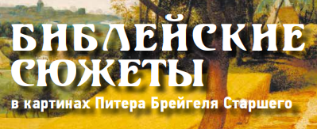
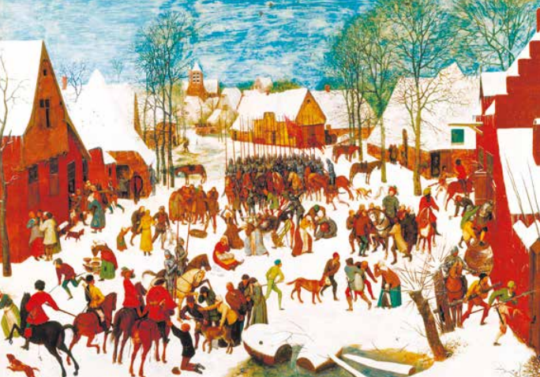
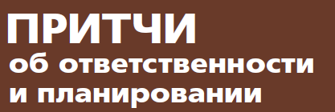
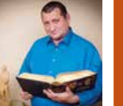
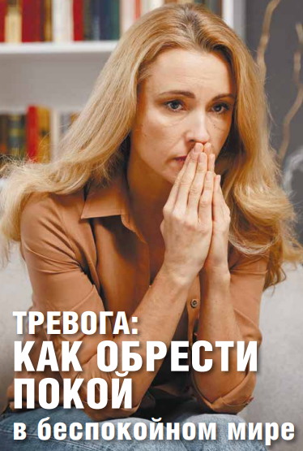

«Ученики в Антиохии в первый раз стали называться Христианами». В Иерусалиме они еще не были христианами, но
теми,
кого называли хаНоцерим – последователями Рабби из Назарета. Прощаясь с учениками на горе Вознесения, Учитель
отправляет
их проповедовать по всему миру.
Мир, который должен был покориться Евангельской проповеди, не был отсталым миром варваров, которые нуждаются в
просвещении, но великой греко-римской цивилизацией: вспомните хотя бы библиотеки древней Александрии, Пергама,
Ефеса.
Академию, основанную великим Платоном в Афинах. Лечебницу Асклепион, основанную отцом медицины Галеном
Пергамским.
Современная наука, медицина, литература, архитектура, законодательство, инженерное и военное искусство берут
начало в
этом греко-римском мире.
Задание Учителя могло показаться неисполнимым: ученики Рабби из Назарета, которых современники называли ха-
Ноцрим,
должны были своей проповедью обратить весь этот великий греко-римский языческий мир в христианство. Но это был
уже
второй шаг. Для начала они сами должны были стать христианами.
Апостол Павел – апостол язычников описывает драму своего обращения из иудаизма в христианство: «Что для меня
было
преимуществом, то ради Христа я почёл тщетою». Рождение христианской церкви – это выход из иудейской традиции
ради
обретения Христа. Церковь должна была порвать с иудаизмом, чтобы последовать за Христом и стать христианской.
Духовное озарение апостола заключалось в том, что он увидел, что всё богатство иудейской традиции сор по
сравнению с
обретением Христа. Это озарение подобно моменту, когда корабль отдает швартовы и отваливает от берега,
отправляясь
в
самостоятельное плавание. Последователи рабби из Назарета так и были назаретянской сектой хаНоцерим внутри
иудаизма,
если бы не отказались от богатого наследия иудейской традиции ради Христа, а мы, потомки язычников, так и
оставались
бы
в неведении о живом Боге Библии. Но Дух Святой наполнил ветром паруса церкви Христовой и корабль двинулся и
достиг
самых дальних берегов этого мира, сделавшись ковчегом спасения для всех народов. И мы на этом корабле.
СОДЕРЖАНИЕ
Легко ли быть
ЖЕНОЙ
ПАСТОРА?
Алина Гончаржена пастора, психолог
«Матушка» – в этом ласковом и уважительном обращении
выражается особое отношение к жене Божьего служителя в нашей
стране. Нам хочется видеть в ней мягкость в отношениях с людьми
и твёрдость в вере, чувствовать её опеку и заботу, не исключающих
и строгость. Матушка представляется нам смиренной и кроткой,
обладающей не только обширными познаниями, но и мудростью, и
здравым смыслом. Конечно, она хорошо воспитывает своих детей,
у неё уютный ухоженный дом, она гостеприимна. Кроме этого, она
не должна затмевать своими талантами и способностями мужа,
вместе с ним самоотверженно служа на ниве Божьей. И ещё она
готова к переезду в любой момент и по первому зову…
Как-то мне довелось услышать наставление одной пожилой
жены служителя своей юной преемнице. С нотками горечи, уста
-
лости и печали в голосе она говорила о том, какая это трудная
работа − быть женой пастора, с какими неблагодарными людьми
ей придётся иметь дело, как много сил и здоровья отдавать
служению…
Что же произошло с этой женщиной? Почему благословенное
служение превратилось в тяжкую непосильную ношу? Как случи
-
лось, что пламя, которое должно было согревать других, дотла
выжгло её саму?
Рядом с пастором находится человек, от которого напрямую
зависит как его личное счастье и душевное благополучие, так
и качество его служения. Об этом часто напоминают на встречах
служителей. Тем не менее иногда случаются серьёзные проблемы
в эмоциональном состоянии пасторских жен, которые не только
должны сами являть образец душевного равновесия, но и поддер
-
живать других людей, а своего супруга в первую очередь.
Конечно, многие скажут, что самое главное и важное дело в
приобретении душевного мира – это молитва. Настойчивая и посто
-
янная. Упорная и горячая. Не подвергая сомнению это утверждение,
попробуем посмотреть на проблему с иной позиции и поискать
новые возможности для поддержки и сохранения эмоционального
здоровья тех, кто рядом с нами.
Об идеальной половинке
Вы когда-нибудь задумывались, сколько времени у жены пастора
занимают её обязанности? Как много времени она может уделить себе?
Имеются в виду те минуты и часы, когда она может просто спокойно о
чём-то поразмышлять, прогуляться, почитать, помолиться, каким-то образом
отвлечься от повседневности и, таким образом, восстановить душевные и
физические силы. Так вот, в зависимости от нагрузки, такого времени у
жены пастора оказывается совсем немного: от одного до шести часов в
неделю! Ей надо успеть поговорить с мужем, выслушать детей, не забыть
о старшем поколении своей семьи, подготовить к субботе урок… Часто
это надо успеть сделать после трудового дня на работе. Как и пастор, его
жена общается с большим количеством людей, и ей надо быть подтянутой,
оптимистичной, приветливой, энергичной, гостеприимной, отзывчивой. Но
каждый из нас, особенно те, кто живёт в городе, и тем более в мегаполисе,
отлично знают, насколько сильно и как быстро истощает эмоционально
и физически стремительный темп городской жизни. Как уберечься от
эмоционального выгорания? Как оставаться активной, привлекательной,
интересной для общины, высококлассным специалистом на рабочем
месте и любящей мамой для детей? Как успевать делать все дела и не
срываться? Или наоборот, как не махнуть рукой на всё и уйти в себя? И на
все эти вопросы семья пастора должна найти ответы.
У пастора, как правило, существует только одна, хотя и весьма разно-
плановая, сфера деятельности – служение общине. Это его Дело. Только
ему он обязан посвящать всё свое время, ведь рабочий день у пастора
чаще всего ненормированный.
Как обстоят дела с его супругой? Как правило, у неё таких сфер
несколько, как минимум две, чаще – больше. Первая, самая важная –
забота о благополучии семьи. Вторая – посильное, но, как ожидается,
обязательное, служение в общине. Но очень часто в силу жизненных
обстоятельств добавляется и третья сфера – работа вне дома.
Таким образом, у жены пастора, в отличие от её мужа, два-три Дела, и
работает она в две-три смены: дом − церковь или дом – церковь − работа.
Согласитесь, нагрузка немалая, но как-то общепринято, что ничего особен-
ного в этом нет, вроде так и надо…
Немного о соответствии…
Итак, над женой пастора довлеет огромный список обязанностей с
одной стороны, и, с другой – некий неписаный свод правил, ожиданий и
представлений, которым она должна соответствовать. Например, портрет
идеальной жены пастора может выглядеть так: опрятная, стильная,
хорошо выглядит, у неё ухожены муж и дети, активна в общине, поёт, играет, ведёт отдел или несёт какое-нибудь
служение, вкусно готовит,
принимает гостей, поддерживает дом в идеальном порядке, часто
молится, скромная, внимательная, посещает людей, примерная супруга,
выдержанная мать. У неё воспитанные и спокойные дети − образец
для подражания в церкви. Образованная, умеет поддержать разговор
с любым человеком на любую тему, специалист в какой-то области;
она консультант по семейным вопросам и вопросам воспитания детей,
честная, надежная, весёлая, зажигательная, спортсменка, хорошая
подруга, вежливая, мудрая, умеет хранить секреты, говорит о людях
только хорошее, умеет ободрить и поддержать, стойкая. Она хорошая
поддержка мужу, здоровая… список можно продолжать бесконечно с
различными вариациями.
К такому идеалу жена пастора стремится, на него равняется. Этот
идеальный набор качеств и умений и определяет неписаные функцио-
нальные обязанности жены пастора.
В то же время жена пастора может тихо и долго страдать от осознания
несоответствия этому идеалу. И эти мысли будут очень сильно отравлять
ей жизнь, более того, в некоторых случаях они могут даже «парали-
зовать» её рост и развитие, принести большие проблемы в семейные
и личные отношения. Иногда жена пастора, выслушав бесчисленные
«должна», приходит к выводу, что она не достойна и не способна быть
женой пастора. В такие минуты она забывает о своей уникальности и
неповторимости, о том, что она может иметь свои предпочтения, что
у неё обязательно есть сильные стороны и могут быть маленькие
слабости. Некоторые жены пасторов думают, что это служение не для
них. Они сомневаются в себе, принижают свои достоинства, не чувствуют
себя способными справиться с этим служением. И тогда община может
лишиться доброй «матушки». Так что в интересах церковной общины
постараться поддерживать жену пастора по мере возможности, чтобы
её эмоциональный статус был позитивным и стабильным.
О количестве и качестве
У каждого человека может быть множество социальных ролей и
статусов. Вопрос в том, как много? Нужно ли стремиться увеличивать
их количество? И самое интересное: оказывает ли влияние социальная
роль на развитие личности, и если да, то какое? Для многих жен
пасторов их роль на данный момент неизбежна и, наверняка, многие
в свое время решали, а может быть, и сейчас ещё решают проблему
соответствия этой роли. Но хорошая новость в том, что решение этой
проблемы возможно при помощи целенаправленных усилий, и это не
что иное, как личностный рост!
Представим, что ваша «матушка» решила ограничиться ролью жены
и мамы детей пастора.
…Годы идут, люди вокруг получают образование, повышают квали-
фикацию, общаются на самые невероятные темы, ездят в увлекательные
путешествия, видят мир во всём его разнообразии, а жена пастора
по-прежнему гремит кастрюлями на кухне, стирает, убирает, решает
конфликты своих детей или людей из общины, иногда что-то урывками
читает. Поначалу кому-то будет казаться, что так и должно быть… Но
не окажется ли, что со временем общине будет трудно найти общие
интересы с такой «матушкой», не столкнётесь ли вы с непониманием,
скукой и отчуждённостью?
Наверное, неспроста Господь создал человека с бесконечными
возможностями для развития. И чем больше мы общаемся и взаимо-
действуем с людьми, тем более интересными и приспособленными к
жизни мы становимся. Чем больше ролей освоит жена пастора, тем
насыщеннее и интереснее будет её жизнь, тем проще будет ей находить
отдых и вдохновение, сменив на время свои занятия.
В этом смысле вы можете помочь жене пастора, если будете прини-
мать её посильное служение, а не укорять за то, что она не отвечает
чьим-то нереалистичным ожиданиям. Не ставьте перед ней цели,
которые априори невозможно достичь. Если жена пастора будет посто-
янно бороться и проигрывать битву в попытке реализовать себя и дома,
и в церкви, и на работе, это в очень скором времени приведёт к кризису.
Многие думают, что пастор и, конечно, его жена, должны обяза-
тельно и незамедлительно вовлекаться в решение проблем людей.На самом деле в этом нет особой необходимости.
Большинство людей
прекрасно справляются со своими трудностями. Более того, «бросаясь
на амбразуру», пасторская семья лишает их возможности научиться
самостоятельно преодолевать препятствия в жизни, что не способствует
ни их личностному, ни духовному возрастанию.
Некоторые считают, что хороший пастор – это тот, который доступен
общине в течение 24 часов в сутки, в течение недели и всего года. Но
жизнь в таком режиме приводит к эмоциональному, а часто и физи-
ческому истощению, создает нервозную обстановку в семье пастора,
ощущение заброшенности у его детей. Поэтому с пониманием относи-
тесь к тому, что и у пастора, и у его супруги должно быть время для
семьи каждый день, один выходной на неделе и отпуск, который они
проводят вместе.
О возрасте
Роль, которую играет жена пастора в жизни общины, изменяется
в соответствии с возрастом. Приспособление человека к постоянно
меняющемуся возрасту и возрастному статусу − вечная проблема,
которая касается каждого, и жена пастора − не исключение. Не успеешь
приспособиться к одному возрасту, как тут же надвигается другой с
новыми задачами и новыми возможностями. Едва девушка начинает
справляться со смущением и комплексами юности, как она уже стоит на
пороге зрелости; едва начинает проявлять мудрость и опытность, как
приходит старость…
Каждый возраст связан с благоприятными возможностями для проявления способностей человека, а также позволяет
научиться
чему-то новому. От молодой жены пастора ожидается активность, целе-
устремленность, задор, от зрелой − сдержанность, рассудительность,
мудрость. Но в каждом возрастном периоде жена пастора может испы-
тывать проблемы, связанные с приспособлением к новым статусным
требованиям. Не требуйте от неё поведения, не свойственного её
возрасту и характеру.
Заключение
Итак, легко ли быть женой пастора? Высокий ли это статус? Довольно
высокий. Статус предъявляет набор требований к тому, кто его получает, и
эти требования необходимо выполнять, в противном случае появляется
неизбежный риск столкнуться с конфликтной ситуацией. Жена пастора
постоянно находится под пристальным наблюдением людей, которые
приходят в церковь. Если она будет неряшливо одеваться, это вызовет,
по меньшей мере, недоумение. Если она склонна посплетничать, может
возникнуть открытое негодование. Если будет с пренебрежением отзы-
ваться о своём муже и его служении, то поставит под удар свою семью…
С другой стороны, быть женой пастора – это серьёзная возможность
для личного роста. Женой пастора не рождаются, ею становятся – и она
в состоянии с Божьей помощью освоить эту роль. Каждая новая роль
в жизни человека – это рост и развитие его личности. Развитие − это
приобретение и освоение новых навыков и способностей. Развитие
позволяет видеть много интересного в жизни и самим быть постоянно
интересными для окружающих. Поэтому в любой жизненной ситуации
поддерживайте усилия жены пастора в её стремлении не только
служить в общине, но и осваивать что-то новое.
Подумайте о том, какими качествами, способностями и умениями
обладает ваша «матушка». Говорите чаще ей о достоинствах, которые
видите в ней, напоминайте о достигнутых вершинах. Находите время,
чтобы помогать ей.
Итак, статус жены пастора подразумевает множество вызовов для
неё. Вопрос в том, чем обернутся для неё эти вызовы: радостью прео-
доления и личностным ростом или ощущением загнанности, бессилия
и разочарования. Многое зависит от самой женщины, но внимательное
отношение и дружеская поддержка общины могут оказать значи-
тельное влияние на самоощущение и формирование личности вашей
«матушки».
Павел ГончарПастор, главный
редактор журнала
Послание апостола Павла к евреям адресовано христианам, которые
«выдержали великий подвиг страданий» (Евр. 10:32) со стороны своих
братьев иудеев, но из-за страха гонений снова вернулись в синагогу
и присоединились к тем, кто «попирает Сына Божия и не почитает за
святыню Кровь завета, которою освящён, и Духа благодати оскорбляет»
(Евр. 10:29) или во время ежедневной молитвы в синагоге вместе с
иудеями произносит проклятие против христиан.
Обращаясь к колеблющимся христианам, апостол пишет: «Ибо
невозможно — однажды просвещённых, и вкусивших дара небесного,
и сделавшихся причастниками Духа Святого, и вкусивших благого
глагола Божия и сил будущего века, и отпадших, опять обновлять
покаянием, когда они снова распинают в себе Сына Божия и ругаются
Ему» (Евр. 6:4-6).
Вместо того чтобы произносить проклятие против христиан вместе
с иудеями, апостол призывает выйти из синагоги и навсегда порвать
с иудаизмом: «Так как тела животных, которых кровь для очищения
греха вносится первосвященником во святилище, сжигаются вне
стана, — то и Иисус, дабы освятить людей Кровию Своею, пострадал
вне врат. Итак, выйдем к Нему за стан, нося Его поругание; ибо не
имеем здесь постоянного града, но ищем будущего» (Евр. 13:13).
Отголоски проклятия христиан иудеями во время чтения ежедневной
молитвы можно услышать в послании Смирнской церкви из книги
Откровение Иоанна: «Знаю твои дела, и скорбь, и нищету (впрочем, ты
богат), и злословие от тех, которые говорят о себе, что они Иудеи, а
они не таковы, но сборище сатанинское» (Откр. 2:9). Иоанн здесь пользу-
ется игрой слов: слово «сборище» – по-гречески звучит как «синагога».
Апостол называет иудейские синагоги сатанинским сборищем, потому
что там проклинают тех, кто уверовал во Христа.
Иустин Мученик, живший в начале 2 века, говорит в диалоге
с Трифоном Иудеем о проклятиях, произносимых иудеями против
христиан: «Вы презираете и, сколько можно вам, бесславите тех, которые
уповают на Него и на пославшего Его Вседержителя и Творца всего Бога:и проклинаете в своих синагогах верующих во Христа. Вы в настоящее
время не имеете власти сами убивать нас, – этому препятствуют
владычествующие ныне; а когда могли, вы и это делали».
Здесь важно отметить, что, спустя столетие после предания Христа
на смерть, иудеи продолжали бороться с его последователями. После
первой Иудейской войны в 70 году и разрушения Храма при импера-
торе Адриане, в 132—136 годах, иудеи снова восстали под предво-
дительством Шимона Бар-Кохбы, в котором многие из иудеев видели
мессию. Христиане отказывались признавать Бар-Кохбу Мессией
и участвовать в восстании. За это Иудеи преследовали их. Иустин
говорит: «(Иудеи) почитают нас врагами и противниками и подобно
вам (язычникам) убивают нас и мучат, когда только могут; в этом
сами можете удостовериться. Да и в бывшей последней иудейской
войне Бар-Кохба, предводитель иудейского возмущения, велел одних
только христиан предавать ужасным мучениям, если они не отрекутся
от Иисуса Христа и не будут хулить Его» (Иустин, письмо императору
Антонину Пию в защиту Христиан). Вследствие этой войны иудеям
запретили селиться в окрестностях Иерусалима и строительство на
месте Иерусалима нового города Элия Капитолина (лат. Капитолий-
ский холм).
Итак, что же стало причиной отделения христиан от иудейской
синагоги? Очевидно, что не компромисс с язычеством, а сама вера во
Христа. Христос стал «камнем преткновения и соблазна» (Рим. 9:32,
33). Христос принес «разделение» между самими иудеями по поводу
веры в Него Самого: «Думаете ли вы, что Я пришёл дать мир земле?
Нет, говорю вам, но разделение; ибо отныне пятеро в одном доме
станут разделяться, трое против двух, и двое против трех: отец
будет против сына, и сын против отца; мать против дочери, и
дочь против матери; свекровь против невестки своей, и невестка
против свекрови своей» (Лк. 12:51-53).
Историческая травма
История христианства начинается с предания Христа на распятие
иудеями, продолжается в преследовании первых христиан из иудеев
и ежедневного трехкратного проклятия их в синагогах. Это абсо-
лютно бескомпромиссное отвержение Христа и христиан не могло
не сказаться на отношении христиан ко всему, что было связано с
иудаизмом. Христиане не хотели иметь ничего общего с теми, кто
проклинает Христа. Игнатий антиохийский, принявший мучениче-
скую смерть в начале II века в годы правления императора Траяна в
послании Магнезийцам предупреждает от уклонения в иудейство:«Посему, сделавшись Его учениками, научимся жить по-христиански.
Ибо кто называется другим, а не этим именем, тот не Божий. Итак,
извергните худую закваску, устаревшую и испортившуюся, и измени-
тесь в новый квас, который есть Иисус Христос. Осолитесь в Нем, дабы
кто-нибудь из вас не попортился, и тогда зловоние не обличило бы
вас. Нелепо призывать Иисуса Христа, а жить по-иудейски; ибо не в
иудейство уверовало христианство, напротив, иудейство в христиан-
ство, в котором соединились все языки, уверовавшие в Бога» (гл. 10).
Это же касается и вопроса празднования Пасхи, которую христиане
несколько столетий отмечали в один день вместе с иудеями. В обра-
щении императора Константина Церквям по итогам Первого Вселен-
ского собора, где стоял вопрос о празднования и Пасхи говорится: «И
поистине, прежде всего, всем показалось чрезвычайно недостойным
то обстоятельство, что в праздновании этого святейшего торжества
мы должны придерживаться обычая иудеев, которые, замарав руки
свои гнусным преступлением, заслуженно ослеплены в своем уме.
Посему подобает, отвергнувши практику сего народа, увековечить
на все грядущие века празднование этого обычая в более законном
порядке».
Как видно, инициатива в том, что христианство стало стремительно
отдаляться от иудаизма, принадлежит самим иудеям, которые и по
сей день занимают абсолютно бескомпромиссную позицию по отно-
шению к Христу и с иронией смотрят на христиан, которые пытаются
жить по-иудейски.
И отвратит нечестие от Иакова
Конечно, историческая драма развода иудеев и христиан не может
служить поводом для антииудейских настроений среди христиан. К
сожалению, история знает примеры крайних форм антисемитизма.
Вера или неверие человека не может быть причиной ненависти и
насилия. Спаситель на кресте молился о предавших Его на распятие:
«Отче! прости им, ибо не знают, что делают».
Наше человеческое виденье ограниченно, а судьбы Господни
непостижимы. Апостол отвечает на вопрос о судьбе Израиля: «Как и
вы (язычники) некогда были непослушны Богу, а ныне помилованы,
по непослушанию их (отвержение Христа Израилем), так и они
(Израиль) теперь непослушны для помилования вас, чтобы и сами
они были помилованы. Ибо всех заключил Бог в непослушание, чтобы
всех помиловать» (Рим. 11:30-32).
Что говорит Апостол? Бог в своей мудрости соединяет в единое
противоположности. Он ставит спасение язычников в зависимостьот иудеев, а спасение иудеев от язычников. Когда язычники во тьме, то
Израиль несёт им свет, как говорит пророк: поставлю тебя «во свет для
язычников» (Ис. 42:6). Когда Израиль во тьме — язычники несут им свет.
После того, когда христианство стало религий большинства и языче-
ские храмы опустели, встал вопрос – что делать с иудеями, которых в
бескрайней Византийской империи было великое множество? Могут ли
они жить среди христиан и продолжать проклинать их в своих молитвах?
Апостол Павел подсказал решение: «Если же падение их – богатство
миру, и оскудение их – богатство язычникам, то тем более полнота
их. Вам говорю, язычникам. Как Апостол язычников, я прославляю
служение моё. Не возбужу ли ревность в сродниках моих по плоти и не
спасу ли некоторых из них?» (Рим. 11:12-14). Видя, как распространя-
ется христианство, как Бог благословляет христиан, не «возбудится ли
ревность» и не перейдут ли многие на сторону Христа, убеждённые в том,
что Бог на стороне христиан?
Уже почти две тысячи лет иудеи живут среди христиан, что является
для них одновременно и благословением и проклятием. Проклятием
потому, что, являясь религиозным меньшинством, они вынуждены
встраиваться в христианскую цивилизацию и временами пребывать в
страхе от вспыхивающих проявлений анитисемитизма. Благословением
– потому что, являясь частью созданной христианами цивилизации, они
могут в полной мере проявить данные им Богом благословения. Сколько
еврейских фамилий среди выдающихся учёных, предпринимателей,
людей искусства! Само еврейское государство создано и существует
исключительно благодаря политической воли христиан, решивших
таким образом восстановить историческую справедливость: вернуть
Божий народ на его обетованную землю.
Христиане не перестают надеяться на то, что придёт день, когда
евреи после тысячелетий отвержения Христа уверуют в Него, чтобы
исполнилась мечта еврея от евреев апостола Павла о спасении иудеев,
отвергающих Христа и проклинающих христиан: «Ибо не хочу оставить
вас, братия, в неведении о тайне сей, — чтобы вы не мечтали о
себе, — что ожесточение произошло в Израиле отчасти, до времени,
пока войдёт полное число язычников; и так весь Израиль спасётся, как
написано: придёт от Сиона Избавитель, и отвратит нечестие от
Иакова» (Рим. 11:25, 26).
Павел ГончарПастор, главный
редактор журнала
В древнем мире вера первых христиан во Христа как Бога не
осталась незамеченной. Плиний младший, правитель провинции
Вифиния, писал Римскому императору Траяну о христианах: «они поют
гимны Христу как Богу». Христиане свидетельствовали мученической
смертью о своей вере во Христа как Бога. На каменном полу древнего
христианского храма в Палестине в начале третьего столетия выре-
заны слова посвящения: «Господу Иисусу Христу».
Первые христиане шли с проповедью в мир, провозглашая смерть
и воскресение Бога и Спасителя Иисуса Христа. Благая весть о Христе,
выйдя за пределы Иудеи, возвещалась в мире эллинской учёности,
что потребовало её переосмысления. Со стороны слушателей, как это
было, например, в случае с апостолом Павлом, когда он проповедовал
в афинском Ареопаге, звучали вопросы: «Может ли Бог умереть и
воскреснуть?» Что мы имеем в виду, когда говорим, что Христос –
воплотившийся Бог? Христианские писатели II и III веков, которых
называют апологетами, в своих трудах защищали христианское учение
перед римской властью и отвечали на вопросы, которые задавали
противники христианства. В этой борьбе с гонителями и критиками
происходило формирование христианского вероучения в том виде, в
каком мы знаем его сегодня.
Путь адвентистского движения во многом похож на тот путь,
которым прошла раннехристианская церковь. Если христианские
апологеты трудились в контексте эллинской учёности, то пионеры
адвентистского движения формировали доктринальное учение в
контексте эпохи рационализма, отличительной особенностью которой
является логическое мышление и аналитический подход. Как для
первых христиан, так и для первых адвентистов главным вопросом
при формулировке вероучения был вопрос о Христе: о Его вечной
божественности.
Христос – Бог, Который стал человеком
Убеждённость в том, что Христос – Бог, Который стал человеком,
своим основанием имеет Священное Писание. Вера во Христа как Бога появилась не в IV веке, как по своему незнанию пытаются утверждать
некоторые, и даже не у апологетов II и III веков, − о ней свидетель-
ствуют уже апостолы.
На первый взгляд имя «Божий Сын», которым назван Христос в
Евангелии, выглядит как принижение Его божественного статуса,
ведь если Он Сын, то у Него по аналогии с нашими земными сыно-
вьями и дочерями должны быть родители, какое-то начало. Но не
будем «спешить колебаться умом»: нельзя человеческими аналогиями
измерять вечность, в которой строятся отношения Бога Отца и Бога
Сына. Имя Сын Божий указывает на Небесную тайну происхождения
Учителя из Назарета по имени Иисус – Сына Человеческого и Сына
Божьего.
О божественной природе Христа прямо свидетельствуют апостолы,
и эти свидетельства не вполне ясны и однозначны: «В начале всего
было Слово, и Слово было с Богом, и Само Оно было Бог» (Ин. 1:1 ИПБ).
«Но единственный, несравненный Сын, Бог, Который у самого сердца
Отца, открыл Его нам (Ин.1:18 ИПБ). «У них – праотцы, и от них же
по плоти Христос, Который превыше всех, Бог наш вовеки благо-
словенный» (Рим. 9:5 ИПБ). «И жить так должны мы с ожиданием
торжества блаженной надежды, когда явлена будет слава вели-
кого Бога и Спасителя нашего, Иисуса Христа» (Тит. 2:13 ИПБИПБ).
«По правде Бога нашего и Спасителя Иисуса Христа» (2 Петр. 1:1).
Когда христиане обращались к Евангелиям и апостольским посла-
ниям, то видели в них образ Христа как вечного Бога: Он имеет власть
прощать грехи (Мк. 2:5-7), власть над природными стихиями (Мк. 4:41),
власть даровать вечную жизнь (Ин. 17:3).
От первых дней своего существования христианская церковь пони-
мала, что вопрос вечной жизни напрямую связан с верой во Христа как
Бога, потому что только Он соединяет в Себе временного человека и
вечного Бога.
Но всё же для древней церкви оставался вопрос: как веру в Бога
Сына и Бога Отца согласовать с библейским единобожием? Особенно
остро этот вопрос стоял в контексте язычества, многобожия греко-рим-
ской культуры.
Нет другого Бога
В языческой культуре того времени существовало множество
богов, и вера христиан в Бога Отца и Бога Сына не могла для языч-
ников казаться чем-то странным. Но давайте зададим уточняющие
вопросы: верят ли христиане во многих богов подобно язычникам?
Как христиане понимают божественность Христа? Что мы имеем в виду, когда произносим слово «Бог»?
В IV веке Александрийский священник
Арий в основу своего учения о природе
Христа положил языческое понимание
«бога», а именно то, что «бог» – это то, кем
вы, люди, можете стать. Боги в понимании
язычников могут иметь начало своих дней,
они не обязательно должны обладать
всемогуществом или всезнанием, иметь
источник жизни в самих себе. Собственно,
так мыслили о богах современные Арию
философы, хотя и выражали своё учение
более утончённо. Учёные греки считали
вечным только сам мир, по-гречески
«Космос», и безличное творческое начало,
породившее этот мир. Сами же боги были
следующим этапом развития, они появи-
лись однажды, чтобы заселить отведённое
им пространство философского космоса.
Некоторые христианские мыслители антич-
ности, включая Ария, испытали на себе
влияние философских представлений о
божестве, что и сказалось на их понимании
божественности Христа.
Формулируя свою веру во Христа как
Бога, христианские богословы основыва-
лись не на популярных представлениях
учёных своего времени, но на свидетель-
стве апостолов и евангелистов, записанных
в новозаветных писаниях.
Священное писание недвусмысленно
говорит нам о том, что отличает Бога.
Бог – Создатель вселенной. Он создал мир из ничего, и поэтому как
Творец не зависит от Своего творения. Он не имеет начала и является
всемогущим, всезнающим и вездесущим, и нет другого такого, как
Он. В книге пророка Исайи 44:6 резюмируется кредо библейского
монотеизма: «Так говорит Господь, Царь Израиля, и Искупитель его,
Господь Саваоф: Я первый, и Я последний, и кроме Меня нет Бога».
Адвентистская
церковь, подобно
христианам
первых веков,
отвергает любые
спекуляции на тему
природы Христа,
которые основаны
на представле-
ниях древних
философов. Мы
верим в Христа,
представленного
в Священном
Писании как Бога
Творца и Бога
любви, Который
искупил нас Своей
смертью.
Отец вечности
Церковь в период формирования основ вероучения своей основой избрала ветхозаветное, а не философско-языческое представление
о Боге. Но борьба с языческим влиянием в процессе становления
церковных догматов была совсем не простой. Противники истины,
как, например, последователи Маркиона, полностью отвергали
Ветхий Завет, и даже некоторые книги Нового Завета, в которых они
находили слишком много от иудаизма. Но учение о божественности
Христа имело своим основанием всю Библию, включая и Ветхий завет.
Так, Новый Завет говорит о Христе как о Боге Яхве Ветхого Завета.
Например, в видении Христа, одетого в священнические одежды
(Откр. 1:17,18), Спаситель говорит о Себе как Боге Яхве: «Не бойся; Я
есмь первый и последний и живый; и был мёртв, и се, жив во веки
веков, аминь; и имею ключи ада и смерти» (сравните Ис. 44:6).
Иудеи верили, что Бог Яхве – их пастырь (Пс. 22:1). В Евангелии
Иисус говорит о Себе подобным образом: «Я есмь пастырь добрый:
пастырь добрый полагает жизнь свою за овец» (Ин.10:11). Когда
Христос говорит о Себе «Я есмь», то Он недвусмысленно указывает
на Себя как ветхозаветного Бога Яхве: «Иисус сказал им: истинно,
истинно говорю вам: прежде нежели был Авраам, Я есмь. Тогда взяли
каменья, чтобы бросить на Него» (Ин. 8:58, 59). Иудеи неслучайно
потянулись за камнями: они прекрасно понимали, что Иисус говорит о
Себе как ветхозаветном Боге Яхве, и хотели убить Его за богохульство,
которое, по их мнению, Он совершил.
В Новом Завете Иисус представлен единым с Богом Ветхого завета.
Евангелисты и апостолы говорят о Христе как Творце мира: «Всё чрез
Него начало быть, и без Него ничто не начало быть, что начало
быть» (Ин. 1:3, также см. Кол. 1:15 и Откр. 3:14). Этот образ Христа
также мы находим у пророка Исайи, который предсказывает появ-
ление Мессии как «Бога крепкого» и «Отца вечности» (Ис. 9:6).
Господь един есть
Но как объяснить божественность Сына, равную Отцу, в свете
библейского монотеизма? В истории христианства, например,
известно учение Монархианства, ставившее своей целью устранить из
учения о Боге даже намек на двубожие. Последователи этого учения
низводили Христа или до уровня простого человека, наделённого
божественной силой, или, напротив, полностью отождествляли Его с Отцом, что противоречит Священному Писанию, где говориться об
Отце и Сыне как двух разных личностях.
Отчасти ответ на вопрос о том, что значит «Бог един», находится
в слове, используемом в еврейском языке для обозначения един-
ственности: «Слушай, Израиль: Господь, Бог наш, Господь един есть»
(Втор. 6:4). Слово эхад означает не только математическое единство,
но и единство отношений. Это слово используется, например, когда
говориться о единстве мужа и жены: «оставит человек отца своего
и мать свою и прилепится к жене своей; и будут двое одна (эхад)
плоть» (Быт. 2:24, см. также Суд. 20:1).
Перед церковью стояла задача таким образом сформулировать
доктрину о Святой Троице, чтобы она ясно отделила истину от
заблуждения. Задача усложнялась принципиальной ограниченностью
человеческого языка описать тайну этой тройственной природы Бога.
Итак, стоял вопрос, как выразить человеческим языком парадок-
сальную природу Бога Отца и Бога Сына: не слитную и нераздельную
их сущность? Для выражения этой невыразимой тайны богословы
использовали греческое слово ὁμοουσιότης – «единосущие», о
Сыне говорится как о «единосущном» отцу. Эллен Уайт пишет об этом
единосущии, комментируя слова Христа: «Иисус сказал: Я и Отец
едины». Слова Христа были наполнены глубоким смыслом, когда Он
заявляет, что Он и Отец были одной сущности, обладали одними свой-
ствами» («Истинные овцы отзываются на голос пастыря», Знамения
времени, 27 ноября 1893 года, стр.54).
Термин «единосущие» не следует понимать, как только некую
ниспосланную на Христа божественную энергию, но как саму Его
сущность, как основное свойство, определяющее его как Бога: Его
предвечное существование, нетварность, всемогущество, всеведение
и вездесущность. Таким образом, вводя понимание единосущности
Сына Отцу, христиане первых веков смогли отстоять истину о трие-
дином Боге перед лицом языческого многобожия.
Как мы уже отмечали, в противовес пониманию единосущия лиц
Святой Троицы лжеучителя либо отвергали существование отдельных
личностей Отца и Сына, соединяя их в одну личность, либо учили, что
Сын имеет начало, и, таким образом, радикально отличается от Отца и
является Божеством второго уровня. Современные противники учения
о Троице подобно еретикам первых веков истории христианства также
видят во Христе Божество второго уровня – как бы не совсем Бога,
возвращаясь, таким образом, к представлениям античных философов
язычников.
Сын Божий и Сын человеческий
Но давайте зададим ещё один вопрос: не говорится ли в Евангелии
о подчинённости Сына Отцу? Не свидетельствуют ли евангелисты об
ограниченной, человеческой природе нашего Господа? Разве сам
факт того, что Он Сын, не ставит Его божественность на ступень ниже
по отношению к Отцу?
Конечно, этот вопрос невозможно игнорировать. Если кратко, то
ответ будет следующим: подчинённость Христа, его зависимость от
Отца, о чём говорится в Евангелии, является актом смирения, отказом от
Своей божественности ради нашего искупления. В Евангелии Христос
представлен как человек, в Котором проступают черты предвечной
божественности. Говоря о Христе как человеке, евангелисты и апостолы
вовсе не отрицают Его божественность, но говорят о Нём как вечном
Боге, Который пришёл в человеческом естестве ради нашего спасения.
Например, апостол Иоанн изображает Христа одновременно как
закланного Агнца и как божественного Пастыря (Откр.7:17). Евангелие –
это добрая весть о том, что Создатель Вселенной, вечный, всемогущий и
всеведующий Бог сошёл на землю и стал человеком, прожил жизнь как
человек и умер на кресте. Будучи Богом, Он «уничижил Себя Самого,
приняв образ раба, сделавшись подобным человекам» (Фил. 2:5-11).
Адвентистская церковь, подобно христианам первых веков, отвер-
гает любые спекуляции на тему природы Христа, которые основаны
на представлениях древних философов. Мы верим в Христа, представ-
ленного в Священном Писании как Бога Творца и Бога любви, Который
искупил нас Своей смертью. Если бы Христос не был «благословенным
во веки Богом» (Рим. 9:5), то рассуждения о Божьей любви потеряло
бы свою силу и убедительность. Что бы мы знали о Боге и Его любви,
если бы Он просто послал к людям кого-то другого вместо Себя,
например, одно из Своих творений? Жертва Христа на кресте поте-
ряла бы искупительный смысл, превратившись в разменную монету в
торговле с дьяволом за человеческие души. Но библейский Бог – Бог
подлинной любви: Он Сам принёс Себя в жертву (Ин. 10:18), а не просто
выступил в роли контрагента в торговле с врагом человеческого рода.
Вера во Христа как вечного Бога имела фундаментальное значение
для христиан древности: наш Иисус не просто великий пророк,
посланный Богом, и не просто самое дорогое создание Бога Отца. Он
благословенный вовеки Бог! Христос является совершенным посред-
ником между Богом и людьми (1Тим.2:5), ибо в Нём соединилось
Божественное и человеческое, поэтому вера в вечную Божественность
Христа является краеугольным камнем адвентистской церкви.
Евгений ЗайцевДоктор богословия,
преподаватель Заокского
Адвентистского
Университета
Будущее волнует и беспокоит сегодня многих. Оно пугает своей неиз-
вестностью и непредсказуемостью. Человеку не дано заглянуть в будущее.
Он не знает, что приготовит ему завтрашний день, и это незнание напол-
няет человеческое сердце определённой тревогой.
Речь идёт не только о вашей личной тревоге перед завтрашним днем.
В последнее время создаётся ощущение, что какая-то глобальная тревога
беспокоит человечество в целом. Достаточно обратить внимание на крайне
пессимистическое описание сценариев будущего развития человечества.
Сегодня практически в каждом учебнике по философии есть глава,
которая посвящена философскому осмыслению будущего, осмыслению
основных сценариев будущего развития человечества. Большая часть этих
сценариев носит достаточно пессимистический характер.
Согласно этим сценариям, человечество ожидает глобальная ката-
строфа. Кинематограф даже предложил новый жанр, которого раньше не
было. Этот жанр так и называется: фильм-катастрофа. В последние годы
были созданы десятки фильмов, которые рисуют достаточно пугающую
картину будущего человечества. В одних фильмах Земля сталкивается с
каким-то космическим объектом, метеоритом, астероидом, и всё на Земле
уничтожается, жизнь прекращается, наступает вечная зима. В других
фильмах ярко снят ядерный «апокалипсис», сотворённый руками самого
человека. В третьих – страшная пандемия неизвестного заболевания,
уничтожающая всё человечество. Чего стоят названия этих фильмов:
«Армагеддон», «Астероид», «Конец света», «После апокалипсиса», «После
завтра», «Столкновение с бездной», «День катастрофы» и др. И конечно
же, вполне понятно беспокойство людей, на которых обрушивается
сегодня поток информации, несущей глобальную угрозу.
Что же говорит об этом Библия? Как сценарий будущего земли и чело-
вечества представлен в Божьем Слове? Согласно Божьему откровению, у
человечества нет перспектив будущего развития, уровень и глобализация
проблем будут только нарастать. Но Библия предлагает всё же более
оптимистический сценарий будущих событий. Земля не превратится в
космическую пыль от столкновения с каким-то космическим объектом,
человечество не исчезнет от страшной пандемии, не уничтожит оно само себя и в ядерном пожаре. Бог, согласно Божьему Слову, вмешается в
судьбу человечества, и это вмешательство в Священном Писании имеет
определённое название. Речь идёт о Втором пришествии Иисуса Христа
на землю.
Второе пришествие не будет похоже на Первое. Первое пришествие
было связано с реализацией Божьего плана спасения человечества от зла
и смерти. Оно сопровождалось тем, что Сын Божий воспринял человече-
ское естество, чтобы стать одним из нас, жить с нами здесь, на земле, явить
нам Бога-Отца, Его любовь. Он был распят на кресте как самый последний
злодей. И в этом распятии как раз-таки и заключается сама суть нашего
спасения: Божий гнев по отношению ко греху изливается на Сына Божьего,
Иисуса Христа, а мы, грешники, освобождаемся от наказания за свой грех.
Вина с нас снимается, и для нас открывается надежда на жизнь вечную.
Второе пришествие Иисуса Христа в отличие от Первого будет носить
совершенно иной характер. Господь придёт в славе, величии, сиянии, в
окружении святых ангелов и «узрит Его, − как сказано в Писании,− всякое
око». Все живущие на земле будут свидетелями этого вселенского события.
Во все века вера во Второе пришествие Христа выражала чаяния согре-
шившего человечества на возвращение утерянного рая. Этой верой жили
ещё патриархи. О Втором пришествии Христа «пророчествовал и Енох,
седьмый от Адама, говоря: "се, идёт Господь со тьмами святых Ангелов
Своих − сотворить суд над всеми и обличить всех между ними нечестивых
во всех делах, которые произвело их нечестие, и во всех жестоких словах,
которые произносили на Него нечестивые грешники "» Иуд. 14-15). Слав-
ного дня явления Господа в этот мир ждал и многострадальный Иов: «А
я знаю, Искупитель мой жив, и Он в последний день восставит из праха
распадающуюся кожу мою сию, и я во плоти моей узрю Бога. Я узрю Его
сам; мои глаза, не глаза другого, увидят Его. Истаевает сердце моё в груди
моей!» (Иов 19:25-27).
Тема Второго пришествия Христа и воскрешения мёртвых явно просле-
живается и в пророчествах Исаии: «Поглощена будет смерть навеки,
и отрёт Господь Бог слёзы со всех лиц, и снимет поношение с народа
Своего по всей земле; ибо так говорит Господь. И скажут в тот день:
вот Он, Бог наш! на Него мы уповали, и Он спас нас! Сей есть Господь;
на Него уповали мы; возрадуемся и возвеселимся во спасении Его!» (Ис.
25:8-9; см. также Ис. 26:19).
А вот как торжественно и величественно описывает сцену пришествия
Христа и будущего суда над миром псалмопевец Давид: «Да веселятся
небеса и да торжествует земля; да шумит море и что наполняет его;
да радуется поле и всё, что на нём, и да ликуют все дерева дубравные
пред лицем Господа; ибо идёт, ибо идёт судить землю. Он будет судить
вселенную по правде, и народы − по истине Своей» (Пс. 95:11-13; см. также
Пс. 49:2-4).
Тема Второго пришествия, тесно связанная с ветхозаветной эсхатоло-
гией, получает своё дальнейшее развитие в свете спасительной миссии
Иисуса Христа в Новом Завете. Хотя Его Первое пришествие уже знаменует
начало реализации принципов Царствия Божия, тем не менее в Евангелиях
и апостольских посланиях подчеркивается, что окончательное разрешение
проблемы зла, греха и смерти ещё ждёт своего часа при парусии (парусия
с греч. – пришествие). В ту минуту, когда ученики Иисуса Христа пребы-
вали в состоянии смущения и тревоги, Он заверяет их словами надежды:
«Да не смущается сердце ваше; веруйте в Бога, и в Меня веруйте. В доме
Отца Моего обителей много. А если бы не так, Я сказал бы вам: Я иду
приготовить место вам. И когда пойду и приготовлю вам место, приду
опять и возьму вас к Себе, чтобы и вы были, где Я» (Ин. 14:1-3). Такой
же живой надеждой окрыляло сердца первых последователей Христа и
обетование, произнесённое ангелами при вознесении Христовом: «И когда
они смотрели на небо, во время восхождения Его, вдруг предстали им два
мужа в белой одежде и сказали: мужи Галилейские! что вы стоите и
смотрите на небо? Сей Иисус, вознесшийся от вас на небо, придёт таким
же образом, как вы видели Его восходящим на небо» (Деян. 1:10-11).
Второе пришествие Христа на землю и будущее воскресение мёртвых
составляло основу проповеди ранней церкви. В этой проповеди звучала
весть утешения и надежды для всех скорбящих, для всех потерявших
по причине смерти своих дорогих и близких. Вот как об этой надежде
пишет, например, апостол Павел: «Не хочу же оставить вас, братия,
в неведении об умерших, дабы вы не скорбели, как прочие, не имеющие
надежды. Ибо, если мы веруем, что Иисус умер и воскрес, то и умерших в
Иисусе Бог приведёт с Ним. Ибо сие говорим вам словом Господним, что
мы, живущие, оставшиеся до пришествия Господня, не предупредим
умерших, потому что Сам Господь при возвещении, при гласе Архангела и
трубе Божией, сойдёт с неба, и мёртвые во Христе воскреснут прежде;
потом мы, оставшиеся в живых, вместе с ними восхищены будем на
облаках в сретение Господу на воздухе, и так всегда с Господом будем.
Итак, утешайте друг друга сими словами» (1 Фес. 4:13-18). Павел пропо-
ведует жителям города Филиппы: «Наше же жительство − на небесах,
откуда мы ожидаем и Спасителя, Господа нашего, Иисуса Христа,
Который уничиженное тело наше преобразит так, что оно будет
сообразно славному телу Его» (Фил. 3:20-21).
А вот с какой уверенностью пишет о Втором пришествии Христа и о
необходимости святости и благочестия для всех, ожидающих его, апостол
Петр: «Придёт же день Господень, как тать ночью, и тогда небеса с
шумом прейдут, стихии же, разгоревшись, разрушатся, земля и все
дела на ней сгорят. Если так всё это разрушится, то какими должно
быть в святой жизни и благочестии вам, ожидающим и желающим
пришествия дня Божия, в который воспламенённые небеса разрушатся и разгоревшиеся стихии растают? Впрочем, мы, по обетованию Его,
ожидаем нового неба и новой земли, на которых обитает правда» (2
Петр. 3:10-13). Исследователи согласны с тем, что именно благодаря этой
уверенности и посвящённой проповеди о скором Втором пришествии
Христа в мир, учение христианской церкви сравнительно быстро распро-
странилось по всем уголкам тогдашней Римской империи.
О Втором пришествии пишет и апостол Иаков. В условиях социальной
несправедливости и неравномерного распределения материальных благ
апостол призывает верующих сохранять терпение: «Итак, братия, будьте
долготерпеливы до пришествия Господня. Вот земледелец ждёт драго-
ценного плода от земли и для него терпит долго, пока получит дождь
ранний и поздний. Долготерпите и вы, укрепите сердца ваши, потому
что пришествие Господне приближается» (Иак. 5:7-8).
«Да не смущается
сердце ваше;
веруйте в Бога, и в
Меня веруйте.
В доме Отца Моего
обителей много.
А если бы не так,
Я сказал бы вам:
Я иду приготовить
место вам. И когда
пойду и приготовлю
вам место, приду
опять и возьму вас
к Себе, чтобы и вы
были, где Я» (Ин.14:1-4)
Тема Второго пришествия Христа является квинтэссенцией и заключи-
тельной главой книги Библии Апокалипсиса или Откровения. Уже в самом
начале книги Иоанн пишет: «Се, грядёт с облаками, и узрит Его всякое око
и те, которые пронзили Его; и возрыдают пред Ним все племена земные.
Ей, аминь. Я есмь Альфа и Омега, начало и конец, говорит Господь,
Который есть и был и грядёт, Вседержитель» (Откр. 1:7-8). Завершается
книга торжеством Божьей любви и справедливости, описанием «нового
неба и новой земли». Наконец-то все мечты и чаяния страдающего чело-
вечества осуществляются: «И отрёт Бог всякую слезу с очей их, и смерти
не будет уже; ни плача, ни вопля, ни болезни уже не будет, ибо прежнее
прошло. И сказал Сидящий на престоле: се, творю всё новое» (Откр. 21:4-
5). Иисус Христос, Который является истинным автором Откровения (Откр.
1:1), заключает записанное Иоанном пророчество словами «ей, гряду
скоро! Аминь». Слово «аминь» означает «истинно», «да будет так». Иоанн,
выражая чаяния всех уверовавших по слову Христа и желая приблизить
этот день, восклицает: «Ей, гряди, Господи Иисусе!» (Откр. 22:20). Этими
торжественными словами и последующим благословением и заканчива-
ется самая загадочная и таинственная книга Библии.
На протяжении многих веков всех верующих христиан не переставал
волновать вопрос: когда же должно произойти это событие? Когда
Христос придёт на Землю во второй раз? Именно этот вопрос волновал и
учеников Иисуса Христа. В 24-ой главе Евангелия от Матфея описывается
очень важная для нашей темы история. Однажды Христос и его ученики
проходили мимо храма, и ученики ещё раз обратили внимание на величе-
ственные здания, которые составляли гордость иудейской нации. Неожи-
данно Иисус Христос произносит слова, которые ошеломили учеников:
«Истинно говорю вам: не останется здесь камня на камне; всё будет
разрушено» (Мф. 24:2). Естественно, ученикам не терпелось узнать, что же
этим хотел сказать их Учитель. Разрушение храма казалось им настолько
нереальным, что ассоциировалось лишь с концом света. Когда все вместе они присели отдохнуть на склоне Елеонской горы, их первый вопрос
был: «скажи нам, когда это будет? и какой признак Твоего пришествия и
кончины века?» (3 ст.)
Апостолы объединили эти два вопроса, так как полагали, что только
конец света может стать причиной разру-
шения Иерусалимского храма. Христос
не стал их в этом разубеждать. Грядущая
судьба Иерусалима была Ему открыта,
но это была настолько страшная судьба,
что ученики вряд ли смогли бы вынести
подробный рассказ о ней. И Христос просто
ответил на заданный вопрос, искусно
вплетая в рассказ о знамениях последних
времен признаки падения Иерусалима.
С тех пор этот вопрос задавался каждым
поколением христиан. Вопрос этот стано-
вился тем более актуальным, чем дальше
уходила история от апостольских времен.
Не секрет, однако, что со временем характер
эсхатологических ожиданий христианской
церкви значительно поменялся. Вслед за
Оригеном, Евсевием и Тихонием Августин
в V веке развивает идею, согласно которой
установление на Земле царства мира,
добра и справедливости должно быть
связано с Церковью, с торжеством её идей
и принципов. Эта идея в последующем
была развита известным средневековым
богословом Иоахимом Флорским (XII в.),
учившем, что пришествию Христа во славе и величии должно предше-
ствовать так называемое renovatio mundi – обновление мира.
Хотя идея видимого и реального Второго пришествия Христа на Землю
в историческом христианстве со временем потускнела, тем не менее как
в Западной, так и в Восточной церквах периодически возникали эсха-
тологические движения, которые подчеркивали близость конца этого
греховного мира и пришествие Избавителя.
В качестве наиболее ярких примеров можно привести Радикальную
Реформацию XVI века в Западной церкви и ожидание конца света Русской
Православной церковью в 1492 году. Тогда, согласно церковному летоис-
числению, должна была закончиться седьмая тысяча лет от сотворения
мира, и должен был прийти Христос.
Валаам библейский и исторический
В марте 1967 года на востоке Иорданской долины, на холме под
названием Телль Дейр Алла, голландская экспедиция во главе с
профессором Хенком Фрэнкеном производила раскопки древнего
языческого святилища. Этот Телль был идентифицирован некоторыми
учеными как библейский Сокхоф (Быт. 33:17), другими − как Пенуэл
(Быт. 32:30).
В святилище была найдена отвалившаяся со стен во время земле-
трясения штукатурка с текстом на древнем диалекте арамейского
языка. Результатом изучения кусков штукатурки стало восстановление
исходного текста, который состоит из двух больших фрагментов,
имеющих разное содержание. В 1976 году текст был впервые опубли-
кован, но его восстановление и уточнение продолжилось.
Культурный слой, в котором находилась штукатурка с текстом,
был датирован VIII веком до Р. X. по обнаруженной в нём керамике.
Палеографический анализ надписи подтвердил эту датировку. Однако особенности арамейского
языка, на котором был
написан этот текст, показы-
вают, что, ещё до того, как он
был написан на стене святи-
лища, текст подвергался
многократному редактиро-
ванию в течение долгого
времени, − возможно,
нескольких сотен лет.
Фрагмент I замечателен
тем, что в нём говорится
о личности, известной
до этой находки только
из ветхозаветной книги
Чисел, − о Валааме, сыне
Веоровом, который в этом
святилище почитался как
пророк. Уже в подзаголовке
фрагмента I, написанном
красными чернилами, гово-
рится: «Книга (или: слова)
[Ва]лаама, [сына Веорова],
человека, который был бого-
видцем».
Как и повествование книги Чисел в 22-24 главах, текст со стены
святилища говорит о Валааме как пророке и называет его «бого-
видцем». В тексте Валаам, сын Веоров, становится свидетелем
совещания богов, которые пытаются упросить либо бога солнца
Шамаш, либо богиню преисподней Шагар (текст не вполне ясен)
навсегда покрыть небеса облаками, чтобы наступила тьма и прекра-
тилась греховная жизнь людей на земле. Что происходит после этого
− не вполне понятно, возможно, с помощью магии Валааму удалось
предотвратить катастрофу.
В расшифрованных строчках текста не говорится о происшествиях,
описанных в Библии, и не встречается имя Господа (Яхве). Однако
имеется ряд сходных выражений при описании Валаама, например,
«и пришел Бог к Валааму ночью» (Числ. 22:20); «и встал Валаам
поутру» (Числ. 22:13, 21).
Теперь посмотрим на реконструкцию текста из языческого
святилища:
1. Надпись [Ва]лаама, [сына Вео]рова, человека, который был бого-
видцем. Вот, боги пришли к нему ночью, и [говорили с] ним
2. согласно этим сло[вам], и они сказали [Валаа]му, сыну Веорову, так:
«Вот явилось последнее пламя, огонь наказания явился!»
3. И встал Валаам на следующий день [...] и он не мо[г есть], и плакал он
4. сильно. И его люди пришли к нему и с[казали] Валааму, сыну Веорову:
«Почему ты ничего не ешь и почему плачешь?» И он
5. сказал им: «Сядьте! Я покажу вам, как вели[ко бедствие!], и, идите,
смотрите дела богов! Боги собрались
6. и могущественные установили дату, и они сказали Ша[ма]ш: «Сшивай,
закрой небеса твоим облаком! Пусть здесь будет тьма и ничего сияю-
7. щего [...], для вас вызовет ужас [облач]ной тьмой, и не будете шуметь
никогда, но [в месте своем ?] стриж,
8. летучая мышь, орел и пели[кан], стервятники, страус и а[ист и]
молодые соколы, и сова, цыплята цапли, голубя, хищной птицы,
9. голубь и воробей, [каждая птица не]бесная, и [на земле] внизу, в
месте, где [пастушеский] посох вел овец, зайцы едят
10. [совер]шенно свобод[но ...]
Значение находки трудно переоценить. Книга Чисел повествует
о противостоянии еврейского народа и моавитского царя Валака,
испуганного вторжением израильтян в Ханаан и пригласившего для
противодействия им месопотамского волхва и прорицателя Валаама в
надежде победить евреев не мечом, а магией и колдовством. Однако
хитроумный план Валака не удался − во время волхвования Валаам,
неожиданно для самого себя, встретившись с неведомым ему до этого
Богом Израиля, вместо того, чтобы проклясть, благословляет израиль-
ский народ.
Среди благословений Валаама выделяется четвёртое, где он
предсказывает пришествие израильского царя − Мессии, «звезды от
Иакова» и «жезла от Израиля» (Числ. 24:17). Это пророчество оказало
большое влияние на последующие поколения Израильского народа.
Некоторые критики Библии ставили под сомнение саму исто-
ричность личности Валаама. Надпись из Телль Дейр Алла не только
подтверждает историчность Валаама, но и показывает, что в связи с
известностью и популярностью месопотамского волхва у язычников
Палестины израильтяне, возможно, узнали о пророчествах Валаама
непосредственно от язычников − свидетелей валаамовых пророчеств.
Этим и можно объяснить некоторое литературное сходство надписи из
Тель Дейр Алла и библейского текста.
(LemaireA. Fragments from the Book of Balaam Found at Deir Alla// BAR,
11:05,1985 Sep/Oct.)
Дом Давидов
Из археологических находок последнего времени весьма инте-
ресной и важной является стела из Телль Дана, который находится
на холме в северной Галилее у подножия горы Ермон, рядом с одним
из рукавов Иордана. Руководитель раскопок Абрахам Биран с архео-
логами из Школы библейской археологии Нельсона Глюка работали
здесь на протяжении 27 лет. В 1993 году был найден первый фраг-
мент стелы − фрагмент А, летом 1994-го − части 1 и 2 фрагмента В.
Стела датируется серединой или второй половиной IX века до Р. X. и
содержит выражения «дом Давидов» и «царь Израилев». Надпись на
стеле − первый случай, когда имя Давида было найдено в древнем
внебиблейском источнике. Особенно замечательно, что в надписи
говорится не о «Давиде», а о «доме Давида», т. е. о династии великого
израильского царя: דוד תיב – «Дом Давида».
Находка (фрагменты А и В 1-2) может быть интерпретирована как
часть воздвигнутой в Дане стелы в честь дамасского царя (вероятно,
Хазаэля), текст на которой рассказывает о его победах, в частности,
над израильскими царями: «И вторгался царь И[з]раилев раньше в
землю отца моего. <...> [Я убил Ио]рама, сына [Ахава], царя Израилева,
и [я] убил [Охоз]ию, сына [Ахава, ца]ря дома Давидова» (строки 3-4,
7-9).
Надпись замечательна тем, что содержит внебиблейское
подтверждение существования династии Давида и указывает, что
«дом Давида» был известен не только в Израиле и Иудее, но и у
соседних народов, что важно для понимания библейских пророчеств о
рождении Мессии из династии царя Давида.
(«David» Found at Dan // BAR, 20:02,1994, March/April)
Является ли библейский Мардохей исторической
личностью?
Не меньший интерес представляет доказательство историчности
ещё одного библейского героя − двоюродного брата Есфири Мардохея.
Это вавилонское имя употреблялось у живших в плену иудеев, что
видно из списков иудеев, возвратившихся из плена вместе с перво-
священником Иисусом и князем Зоровавелем, в 538 году до Р. X. (см.
Ездр. 2:1-2; Неем. 7:6-7). Имеется около 30 клинописных табличек,
датируемых между 505 и 499 гг. до Р. X., в которых употребляется имя
«Мардука» или «Мардуку». Одна клинописная табличка, найденная в
пригороде древнего Вавилона городе Борсиппе, которая датируется
временем конца царствования Дария I или началом царствования
Ксеркса I. Табличка рассказывает о высокопоставленном чиновнике по имени Мардука, который был финансовым инспектором при
персидском дворе в Сузах. Очевидно сходство не только с еврейским
произношением имени − Мардокай, но и с положением, которое
библейский Мардохей занимал при персидском дворе в Сузах во
времена Ксеркса I. Можно с большой долей вероятности утверждать,
что это одно и то же лицо. «Постоянно используемое выражение книги
Есфирь о Мардохее как « сидящем при царских вратах» указывает на
его положение придворного чиновника при персидском дворе. При
этом маловероятно существование двух высокопоставленных чинов-
ников с одним именем в одно время и в одном месте». Конечно, для
скептика всегда остаётся место сомнению, однако приведённый факт
свидетельствует в пользу историчности личности Мардохея.
(Gordis R. Religion, Wisdom and History in the Book of Esther: A New Solution to
an Ancient Crux //Journal of Biblical Literature, 1981,100.)
Существал ли Голиаф на самом деле
В ноябре 2005 года в ходе раскопок в Телль-эс-Сафи, где некогда
существовал древний город филистимлян Геф, израильские архео-
логи нашли на глубине примерно двух метров небольшой фрагмент
керамического изделия, вероятно, чаши. На этом осколке ученые
обнаружили надпись на древнееврейском языке, которая содержит
слова, соответствующие филистимскому звучанию имени Голиафа.
Находка датируется примерно 900 г. до Р. X., что несколько позже
того периода, когда жил библейский воин Голиаф, которого победил
будущий израильский царь Давид (около 1000-961 гг. до Р.Х). То, что
холм Телль-эс-Сафи современными археологами рассматривается как
местонахождение древнего филистимского города Гефа, о котором
в Священном Писании говорится как о родине Голиафа (1 Цар. 17:4),
позволяет предположить, что надпись является свидетельством
хранившегося в данном месте исторического предания о Голиафе.
Надпись может рассматриваться как внебиблейское подтверждение
историчности филистимского воина.
Таким образом, обнаружено свидетельство того, что имя Голиафа,
которое появляется в Библии в описании битвы между Давидом и
филистимским великаном, не является выдумкой автора библейского
текста.
Значение археологической находки стоит в одном ряду с произве-
дённой несколько лет назад расшифровкой кумранской библейской
рукописи 1 книги Царств 17:4, в которой рост Голиафа указан таким:
4 локтя и 1 пядь (примерно 2 м 10 см), что соответствует данным
греческого перевода Семидесяти и снимает вопрос относительно масоретского средневекового варианта древнееврейского текста,
где говорилось, вероятно, вследствие ошибки переписчика, что рост
Голиафа 6 локтей и 1 пядь (примерно 3 м 10 см).
Важное открытие было сделано в июле 2005 года на холме Телль-
Зайит в Израиле экспедицией под руководством доктора Рона Тэппи,
профессора библейских и археологических исследований из амери-
канской Питтсбургской богословской семинарии. Р. Тэппи проводил
там раскопки с 1999 года.
Телль-Зайит представляет собой малоисследованный холм
площадью около 3 гектар, находящийся в 30 км Ашкелона. В стене
древнего здания, которое датируется X в. до Р. X., был найден 17-кило-
граммовый известняковый камень с надписью из двух строк. Они
представляют собой запись всех 22 букв еврейского алфавита в его
древнейшем варианте. Буквы древнееврейского алфавита написаны
в той же последовательности, как это принято сейчас, за некоторым
исключением. Форма букв позволяет считать шрифт алфавита ранним
вариантом палеоеврейского шрифта, который использовался в
Израиле вплоть до V в. до Р. X. После вавилонского плена, палеоев-
рейское написание букв вытесняется квадратным арамейским. Буквы
найденного алфавита сохраняют следы зависимости от финикийского
способа написания, из которого они, по всей видимости, и произошли.
На оборотной стороне камня имеется чашеобразное углубление, что
позволяет предположить, что этот камень использовался как сосуд
для питья во время культовых ритуалов.
Найденный алфавит важен и в связи с пониманием истории
библейской письменности. Находка свидетельствует о том, что к X
в. до Р. X. еврейское письмо в целом отделилось от финикийского,
что позволяет опровергнуть мнение ряда скептически настроенных
ученых о том, что письменность в древнем Израиле возникла не ранее
VIII-VI вв. до Р. X. Надпись позволяет утверждать, что письменность в
Израиле в окончательном виде сформировалась к X веку, а это озна-
чает, что первые священные книги Ветхого Завета были написаны в
период Исхода и Судей (XV-XI вв. до Р. X.).
(Wilford J.N. A Is for Ancient, Describing an Alphabet Found Near Jerusalem //
New York Times, 09.11.2005.)
Составил Павел Гончар

Татьяна ЛебедеваСотрудник Заокского
Адвентистского
Университета
Питер Брейгель Старший, которого коллекционеры именуют Мужицким
Брейгелем, – известный нидерландский живописец и рисовальщик эпохи
Северного Возрождения. Брейгель родился в крестьянской семье. Как и
большинство нидерландцев, он получил прозвище от названия деревни,
откуда был родом, но своим детям мастер передал это прозвище уже как
фамилию.
Несмотря на приземленность сюжетов, картины Брейгеля не так уж
просты. Вот, что пишет австрийский историк искусств Макс Дворжак:
«Полное непонимание значения его картин проявляют те, кто называет их
“простонародными” и думают, что они созданы для развлечений кругов,
откуда Брейгель черпал темы своих изображений. Его картины полны того
же веселого, идейно смелого земного начала, которое было свойственно
наиболее прогрессивным религиозным реформаторским течениям эпохи
и состояло в сочетании религии с “естественным” человечеством, не
скованным никакими церковными исповеданиями и догмами. Брейгелю
важно скорее не то, какими должны быть люди; грубовато и с юмором
рассказывает он о том, каковы они на самом деле, с их ошибками, стра-
стями и чудаковатостями, и представляет зрителю самому извлекать
отсюда поучения».
Как и Шекспир, ещё один представитель эпохи Возрождения, хорошо
разбирающийся в античной литературе и современной философии,
художник использовал грубую приземлённость крестьянина для передачи
глубоких этических ценностей. Мысли и комментарии из эссе «Похвала
глупости», написанного Эразмом Роттердамским в 1509 году, пронизы-
вают все его художественные произведения, а среди его меценатов были
такие известные коллекционеры произведений искусства, как кардинал
Антуан Перрено де Гранвель, представитель короля Филиппа в Брюсселе.
Пейзаж владеет воображением Брейгеля на протяжении всей его
жизни. Он одним из первых вводит его в картины как самостоятельную
тему. В 1565 году по заказу просвещённого антверпенского купца Нико-
ласа Йонгелинка художник пишет серию картин под названием «Времена
года». В этих великолепных пейзажах Брейгель смог выразить свои
представления о месте человека в созданном Богом природном мире – и
он написал их накануне исторического катаклизма.
Политическая обстановка в Нидерландах в то время была очень
сложной. Брейгеля и его соотечественников возмущал произвол испанцев,
которые управляли Нидерландами. По стране прокатилась волна иконо-
борческих погромов: толпы людей, воодушевляемых проповедниками,
врывались в храмы и вымещали свою ненависть к папскому Риму на
иконах и статуях святых. Тогда было разорено несколько тысяч храмов.
Эти выступления были подавлены местными властями. В 1566 г. король
Испании Филипп II решил жестоко наказать непокорную страну и отправил
туда многотысячную армию под командованием надёжнейшего из своих
полководцев – герцога Альбы, который получил полномочия королевского
наместника. Кровавое правление Альбы, стоившее стране многих тысяч
человеческих жизней, привело к войне, начисто разорившей Фландрию
и Брабант – главные культурные области страны. Жители северных
провинций, выступившие в 1568 г. против испанского короля, не опускали
оружия до самой победы в 1579 г., когда было провозглашено создание
нового государства – Соединенных провинций, основной религией
которых стал кальвинизм.
Картина «Сенокос» из цикла «Времена года», написанная до начала
трагических событий, изображает работы, которые традиционно прихо-
дятся на июль. Свет в картине мягкий, разгар лета художник пишет в
любимом бежевом колорите.
Вот крестьянин везёт продавать на рынок овощи и ягоды. Люди несут
на головах корзины с товаром. По дороге в противоположную сторону идут
с сенокоса две женщины с граблями. Они спешат домой, уставшие от
жары и работы в поле. В левом нижнем углу мужчина точит длинную косу.
Луга уже скошены, но он готовит орудия труда впрок для будущей жатвы.
Летняя страда наполняет крестьян чувством радости и гордости за свой
труд. Мужчины и женщины заняты сбором в стога золотистого сена. Рядом
весело резвятся дети. Землю пригревает жаркое солнце. Люди одеты по
сезону, на головах крестьян лёгкие головные уборы. Запряжённые в
повозку с сеном лошади жадно пьют воду из чана.
Слева на скале изображён древний монастырь. В центре композиции –
деревня с церковью, за которой расположена ветряная мельница. Вдали
простирается чудесный горный пейзаж. Художник нарисовал горы, речку,
голубое с облаками небо. Гармония царит на просторных равнинах, распо-
ложенных на границе Голландии и Бельгии. Как хорошо в мире, где всё
пышет изобилием в середине лета − благодатного жаркого лета накануне
войны.
В цикле картин «Времена года» художник показал жизнь крестьян,
тесно связанную со всеми нюансами северной природы: вот охотники с
собаками увязают в снегу, вот народ весело катается на льду замерзшей
речки, вот пасмурный зимний день, а вот солнечный летний. Дождь, от которого промокали до костей; солнце, согревающее обветренные лица.
Жатва и сенокос, базарный день и свадебный пир.
Как, должно быть, они ценили сенокос! Скашивали сочную траву и
укладывали её, сладко пахнущую полевыми цветами, в большую телегу.
Стог растёт всё выше и выше, впряжённые в телегу лошади жуют свежеско-
шенную траву, мирно помахивая хвостами. Люди слушают звонкую песню
жаворонка, усыпляющее жужжание – полдень, пора отдохнуть. Крестьяне
вытирают пот со лба. И нет сомнений, что все эти люди живут в единстве со
всем Божьим творением. Питер Брейгель, деревенский парень, ставший
художником и учёным, смог своей кистью непревзойдённо и великолепно
запечатлеть сельскую жизнь, всем сердцем проникнув в космическую
мудрость автора «Экклезиаста»:
«Всему свой срок и время своё – всякому делу под небесами:
время рождаться и время умирать, время сажать и время корчевать…
время плакать и время смеяться, время скорбеть и время плясать…
время любить и время ненавидеть, время для войны и время для мира…
Всё, что сделал Бог, − хорошо в своё время» (Эккл. 3:1-2, 4, 8, 11).
Брейгель, нарушая сложившиеся традиции, помещает даже библей-
ские сюжеты в родные нидерландские пейзажи, в хорошо знакомую своим
соотечественникам повседневную среду. Более того, библейские персо-
нажи иногда вообще играют второстепенную роль в композиции картины,
оказавшись в центре деревни, на фоне северной зимы. Чтобы увидеть на
большом полотне «Перепись в Вифлееме» евангельскую историю, нужно
внимательно присмотреться. «В те дни император Август издал указ о
переписи по всей его империи… Так и Иосиф из города Назарета, что в
Галилее, отправился в Иудею, в город Давида, называемый Вифлеемом,
потому что был он из рода Давида, его потомком» (Лк. 2: 1, 4-5).
Очень холодно, замёрзшие водоемы, заснеженные крыши. Брабант-
скую деревню заливает вечерний свет; дети играют на улицах, жители
спешат после трудового дня домой, к тёплому очагу. В левой части
картины изображена гостиница «Зеленый венок», люди толпятся у входа,
чтобы записаться у чиновника и заплатить налоги. На стене гостиницы
висит табличка с двуглавым орлом на желтом фоне. Это герб правящей
династии Габсбургов, герб Священной Римской империи. Во времена
Брейгеля южная область Нидерландов принадлежала Испанской короне.
В центре картины, возле огромных бочек на телегах, Иосиф с плотницким
инструментом на плече ведёт за повод осла, на котором сидит закутанная
в теплое покрывало Мария, рядом шествует вол, символический атрибут
евангелиста Луки. Действие Евангелия разворачивается неприметно для
окружающих. Главных героев никто не замечает среди повседневной
суеты, их важная миссия скрыта от досужих глаз, никем пока не узнана.
Внешне они не отличаются от других людей, которые заняты своими делами. И только зритель, глядя на картину, понимает, что благодаря им
жизнь человечества скоро изменится навсегда.

Картина на другой евангельский сюжет − «Избиение младенцев» –
написана между 1565 и 1567 годами. Питер Брейгель помещает действие
в зимний голландский городок. Солдаты, избивающие младенцев, – это
ландскнехты-наёмники, которые совершали карательные рейды в
Испанских Нидерландах по приказу кровавого герцога Альбы. Мы видим
заснеженную площадь. Всадники и пешие воины нападают на жителей,
отнимают у них младенцев. На дальнем плане стоит конный отряд в
стальных латах, ощетинившийся копьями. И всё понятно: вот он, страшный
евангельский эпизод, когда Ирод посылает своих солдат в Вифлеем, чтобы
убить младенцев от двух лет и младше. Но по политическим соображениям
позже на этой картине, как подтвердили исследования, младенцы были
записаны художником. И не только дети закрыты от зрителя домашней
птицей и скотом, кувшинами, какими-то тюками, головками сыра и тому
подобными деревенскими атрибутами, изменен также и облик предво-
дителя отряда. Потому что первоначально этому неумолимому посланцу
царя Ирода художник, сознательно или невольно, придал портретное
сходство с герцогом Альбой. За отсутствие явных признаков тождества с
Евангельским сюжетом картину длительное время называли «Нападение
на деревню». Жуткий смысл происходящего не сразу доходит до сознания
зрителя: трагедия в Вифлееме выглядит как-то буднично. Земля величава
в своём белоснежном убранстве. Кажется, что природа словно застыла от ужаса и горя, глядя на человеческую жестокость. Истина жива даже в
безжалостный век, её можно отыскать не только в Священном Писании,
но и на страницах вечной книги природы.
Историческим фоном для картины «Притча о слепых» также стала
эпоха. Сюжет иллюстрирует слова Христа, сказанные о фарисеях: «Оставьте
их: они – слепые поводыри слепых, а когда слепой слепого ведёт, оба
упадут в яму (Мф. I5:14).
Брейгель изображает шестерых незрячих мужчин. Они бредут,
положив руку на плечо идущего впереди человека. Церковный шпиль
справа устремляется ввысь, как символ спасения, но обманутые люди,
беспомощные в своей слепоте, движутся в буквальном смысле в никуда и
валятся в грязный деревенский пруд.
Слепцы и калеки – обычное явление Средневековья, они бродили
по городам и деревням, прося подаяние, и иногда в агрессивной форме.
Художник изображает их гротескно. Его слепцы вовсе не нищие, на них
добротная чистая одежда. На лицах отпечаток порока. Они не только слепы,
но и немы, их губы плотно сжаты. Вожак уже упал в канаву, потянув за
собой товарища, но никто из них не открывает рта, чтобы хотя бы голосом
предупредить следующих об опасности. Жертвы судьбы, покинутые, они
падают, как лепестки с цветка, − образ неотвратимой судьбы человека, ибо
«невдомёк человеку всё, что вершит Бог, не постичь ему этого от начала и
до конца» (Эккл. 3:11).
Искусствоведы предполагают, что картина отражает споры проте-
стантов и католиков о вере. Нидерландские протестанты, руководствуясь
учением Жана Кальвина, отвергали авторитет Католической Церкви,
занимали позицию иконоборчества, руководствуясь словами Жана
Кальвина: «Грешно давать Богу видимую форму; создание идолов означает
полный разрыв с истинным Богом». Правители Нидерландов – испанские
католики, вступив в полемику с кальвинизмом, действовали по принципу
«цель оправдывает средства». Обе стороны воевали не только словом, но и
огнём и мечом, обвиняя друг друга в жестокости и слепоте.
Доподлинно неизвестно, придерживался ли Брейгель кальвинизма, и
имела ли картина политическую подоплёку, однако, исследователи пред-
полагают, что художник критически относился к католической церкви.
Мы, верующие во Христа, уповаем на Божью любовь, доверяем Божьей
силе, а потому сможем выстоять в выпавшее на нашу долю сложное
время, если последуем за Иисусом Христом, Который есть «путь, истина и
жизнь». Иисус хочет сохранить нас в Своём совершенном мире и приведёт
нас к вечной жизни.
Использованы материалы: H. Borchgrave, В.Г. Власов, М. Дворжак, Т.М.
Котельникова, М. Кукин


Иван ЛобановПреподаватель Заокского
Адвентистского
Университета, научный
сотрудник Института
перевода Библии
В Евангелии есть ряд притч Иисуса, которые напоминают нам о том, что
будущее зависит от нашего решения, нашего выбора и даже ответственности за
этот выбор. Сами притчи Иисуса бывают разного размера. Иногда это просто некое
сравнение или метафора: вы – соль, которая предохраняет этот мир от порчи, или
вы – свет, город на вершине горы, заметный всем (Мф. 5:13, 14). Притчи довольно
короткие.
У евангелиста Луки упоминаются две притчи о планировании: о строи-
тельстве башни и царе, ведущем войну (Лк. 14:28–33). При этом они звучат
в контексте призыва Иисуса, где Он говорит о цене ученичества толпе, окру-
жавшей Его. Не быть Его учеником тому, кто ценит свои родственные связи, да
и свою жизнь больше, чем Иисуса. Перед строительством башни надо подумать,
во что это обойдётся. А то начнёшь, не закончишь, и над тобой будут смеяться.
Часто можно видеть в городах недостроенные здания. Почти 18 лет строился
Дом Советов в Калининграде, а через 36 лет здание семидесятиметровой
высоты демонтировали. Да, строители этой современной башни недостаточно
продумали свой проект.
Царь перед битвой думает, сможет ли он одолеть со своим десятитысячным
войском противника, имеющего двадцать тысяч воинов. Справедливые сомнения
вынудят его пойти на мирные переговоры, пока не поздно.
А если мы не взвесим все риски и трудности, можем ли стать учениками
Иисуса?
Иисус быстро завоевал популярность в Галилее, Самарии, Иерусалиме, сотни
и тысячи людей собираются послушать Его учение, к Нему приходят за исцеле-
нием, многие хотят стать Его учениками. Но не все остаются с Ним, слыша, как
Он говорит о серьёзности Своей миссии, которой нужно посвятить себя целиком.
Ведь она очень дорого может обойтись человеку.
В притче о десяти девах (Мф. 25:1–13) говорится, что одно
только участие в миссии не гарантирует успешных результатов.
Нужно что-то ещё.
В Царстве Небесном, по словам Иисуса, произойдёт то же, что с
десятью девами, которые должны были встречать жениха со своими
светильниками, чтобы освещать дорогу свадебной процессии.
Сразу поясним, что этих девушек позвали для серьёзного дела. В
древности улицы в городах Ближнего Востока не освещали фонарями.
Если кому-то надо было выйти из дома в тёмное время суток, человек
брал с собой факел или масляный светильник. Свадебное торжество
устраивали вечером, когда спадала дневная жара, а для этого нужно
было организовать освещение.
Пять из десяти девушек позаботились о запасах масла, не только
заправив светильники дополна, но ещё и прихватив дополнительно
по кувшинчику с оливковым маслом. Другие пять девушек оказались
легкомысленными, они наполнили только светильники, надеясь, что
налитого в них масла хватит. Но жених задержался, и все девушки
уснули в ожидании. В полночь их разбудили возгласы: «Жених идёт!
Встречайте!» Девушки проснулись, и оказалось, что масло в лампах
практически выгорело. Понадобилось «поправить» светильники, то
есть подлить в них масла. Первые пять девушек воспользовались
маслом из кувшинчиков, а у других пяти девушек запаса не было.
Интересно описание этих десяти девушек. У пяти из них есть
мудрость, а у других пяти – нет. Мудрость (евр. хохма) здесь подразу-
мевает практичность. Им нужно было выполнить важное поручение:
осветить двор и улицу возле дома, чтобы свадебная процессия ночью
не заблудилась и без проблем нашла вход в дом, где всё приготовлено
к свадьбе. Те, кто ответственно подошли к этому делу, взяли с собой
запас оливкового масла для своих светильников.
Легкомысленные попросили толковых: «Поделитесь с нами вашим
запасом, наши светильники гаснут!». Но те возразили: «На всех масла не
хватит. Но его можно купить, сходите к продающим». Но пока девушки
искали масло, жених и его гости вошли во двор, где был приготовлен
брачный пир, а дверь на улицу заперли. Девушки вернулись и стали
стучать в двери, умоляя: «Господин! Открой!» Но в ответ услышали: «Не
знаю я вас».
Иисус завершает притчу такими словами: «Поэтому бодрствуйте,
ведь не знаете ни дня, ни часа Второго пришествия».
Вам не кажется, что толковые девушки повели себя не очень друже-
любно? Но что они могли поделать? Им дали поручение, и они подошли
к нему ответственно. Ведь совсем нетрудно сбегать в лавочку и купить
запас масла − ночь впереди, пригодится. Девушки, оказавшиеся без
масла, не обижаются, они всё понимают и отправляются за покупкой.Однако ночью найти продающего масло не так-то просто, городок
спит, они задерживаются и опаздывают − дверь на пир уже закрыта.
Поскольку они не участвовали в предсвадебных хлопотах, их на пир не
пускают. Те, кто не помогал в возвещении Евангелия, в помощи бедным
ради Христа, окажутся вне дверей при Втором пришествии.
Притча о талантах хорошо известна многим. В язык прочно вошли
такие выражения: «растратить таланты», «закопать свой талант». Мы
пользуемся ими, не подозревая, что это слова из Евангелия. Притча
приведена в Евангелиях в двух вариантах. Первый − Притча о талантах
(талант − единица массы, счётно-денежная единица в Античные
времена, равная весу около 30 кг, один аттический талант равнялся
6000 серебряным монетам, Мф. 25:14–30). Второй вариант − Притча
и о доверенных деньгах (там фигурирует серебряная мина весом
430 грамм, Лк. 19:11–27, один талант равен 60 минам). Эти средства
господин вручает своим слугам для того, чтобы они распорядились
ими в его отсутствие, и, разумеется, приумножили. При этом у Матфея
каждый из трёх слуг получает столько средств, сколько в состоянии
использовать (пять, два и один талант). В итоге первые двое удвоили
капитал, а последний просто его сохранил и вернул хозяину. Каждый
получает по способностям. У Луки все слуги в одинаковом положении
− получают по одной мине, а результат оказывается разным: первый
приумножил средства в десять раз, второй – в пять, а третий просто
сберёг доверенное ему.
Прошло какое-то время, господин вернулся и потребовал у слуг
отчёта. Первый рассказал, что одна мина принесла десять мин, и вернул
деньги хозяину. Тот похвалил его: «Продолжай трудиться. В малом ты
был верен, многое доверю тебе. На пир приходи, раздели мою радость».
Слуга, который получил на одну мину пять прибыли, тоже удосто-
ился похвалы и приглашения на пир: «Продолжай. В малом ты был
верен, многое доверю тебе. На пир приходи, раздели мою радость».
А ещё один слуга сказал: «Господин, я знал о твоей жестокости:
жнёшь, где сам не сеял, и собираешь, где сам не рассыпал. В страхе
я зарыл твои деньги в землю. Вот они в целости, возьми!» Господин
рассердился: «Бесчестный слуга и ленивый! Ты всё знал обо мне и не
отдал мои деньги ростовщикам, чтобы вернуть мне их с процентами.
Заберите у него порученное, отдайте тому, у кого больше всех. Кто
приумножает, тому дадут ещё и с избытком. А у кого нет, лишится
последнего. А этого негодного слугу выбросьте вон, во тьму: там будут
голосить и скрежетать зубами». Кто слушать умеет, поймёт! (Мф.
25:19–30, пересказ мой. – И.Л.)
Получается, что наша вечная участь определяется нашим реше-
нием, когда мы становимся учениками, когда взвешиваем, насколько
христианство будет мне по плечу, смогу ли я идти этим путём, хватит ли моих сил, не сдаться ли уже сейчас. Об этом Притча о башне и царе.
Здесь заметим, что Иисус не отговаривает нас идти за Ним, напротив,
уверяет, что, как бы ни было трудно, с Ним возможно осилить любой
путь. Нас ожидает очень много открытий и обретений.
«Пётр напомнил: „А мы оставили всё своё, за Тобой последовали “».
А Он на это сказал: «Кто оставил дом, жену, братьев, родителей или
детей ради Божьего Царства, получит в это время гораздо больше, а
в грядущем мире – вечную жизнь» (Лк .18:28–30, пересказ мой. – И.Л.).
Наша жизнь, конечно же, должна быть качественной до конца.
Решив следовать за Иисусом, мы призваны быть терпеливыми, после-
довательными, ответственными и верными. Ярко светить − значит
не только обладать знаниями, но и выполнить своё поручение, своё
предназначение. Иисуса увидят те, чей свет помог другим с радостью
встретить Небесного Жениха при Его возвращении. Об этом в том числе
Притча о десяти девах.
>А Притча о талантах напоминает нам о том, что служение Богу
приносит драгоценные плоды, и мы призваны посвятить наши таланты
служению, делу Божьему.
Наша жизнь определяется тем выбором, который мы с вами делаем.
Это довольно простая и очевидная мысль, и ради неё одной наши
рассуждения здесь не имеют смысла. Дело в другом: наша жизнь
очень коротка и нельзя откладывать выбор бесконечно, ведь можно
попросту не успеть его сделать. А уж если выбрали Христа, за Него нужно держаться, постоянно выгребая из опасных стремнин и порогов
(кто ходил по горным рекам на байдарке, понимает!) на фарватер,
который называется Божий Путь.
Если у вас есть какое-то большое дело, то, выполняя его, ты испы-
тываешь удовлетворение. Например, вы строите дом. На строительство
нужны средства, материалы, помощники. Вы советуетесь со специ-
алистами, создаёте проект, делаете чертежи, планируете бюджет,
выбираете площадку для строительства, закладываете фундамент,
возводите стены, кроете крышу, монтируете потолок, прокладываете
электрику, коммуникации, затем переходите к отделке. И вот как будто
стройка завершается, но только тут вы понимаете, что не всё учли.
Возможно, дом оказался великоват, или некоторые комнаты маловаты.
А некоторые помещения, похоже, не будут востребованы и доделать их
руки уже не дойдут. И процесс строительства становится бесконечным.
А однажды мы приходим к мысли, что если бы начали сначала, то
сделали бы всё по-другому. Избежали бы многих ошибок. Вот в чём
суть. Но если дом, даже очень большой, можно разобрать и построить
новый, гораздо лучше, с учётом всего приобретённого опыта, то заново
прожить нашу жизнь мы не можем (хотя, когда мы приходим к Богу, у
нас появляется возможность что-то исправить). Поэтому Библия говорит
нам о том, что в жизни нужно постараться сразу выбрать правильное
направление, чтобы быстрее дойти до цели, обрести подлинный, не
фальшивый успех, последствия которого простираются в вечность.
Кю Бонг Ли
«И аист под небом знает свои определённые времена, и горлица, и
ласточка, и журавль наблюдают время, когда им прилететь; а народ Мой
не знает определения Господня» (Иеремия 8:7).
Осень почти подходит к концу. Скоро северные земли замёрзнут, покрыв-
шись снегом. В это время в небе можно увидеть огромные стаи птиц, которые
летят в тёплые страны, спасаясь от зимних холодов. Весной мы наблюдаем
обратную картину: птицы летят на север, чтобы вывести потомство и вырас-
тить птенцов. Миграция безошибочна, ежегодна и ритмична – это одно из
величайших чудес мира природы.
Как объяснить такие миграции? Почему птицы вообще мигрируют? Как
они узнают, когда пора отправляться в дальний путь? Что определяет траек-
торию и направление их полёта? Как они узнают о месте назначения и как
готовятся к путешествию?
Эти и другие вопросы на протяжении многих лет занимали умы учёных.
Для учёного, придерживающегося христианского мировоззрения, миграция
птиц – это ещё один пример, показывающий, что за всеми этими чудесами
природы стоит Божественный замысел.
Масштабы миграции
У птиц миграция обычно означает путешествие в обе стороны, то есть
ежегодный перелёт в тёплую страну и обратно. Такая миграция наблюдается
в основном у птиц, обитающих на больших землях Северного полушария,
которые зимой покрываются снегом и льдом. Стаи птиц, живущих в Евразии и Северной Америке, пересекают экватор, чтобы провести зимний
сезон в Африке или Южной Америке.
Например, помеченная крачка была обнаружена через 90 дней
на побережье юго-восточной Африки, в 9 000 милях (14 481 км) от
своего северного дома. Другая крачка пролетела более 10 000 миль
(16 090 км) из Гренландии, чтобы добраться до юго-восточной
Африки. Ещё одна крачка, окольцованная на арктическом побе-
режье России, была вновь обнаружена на побережье Австралии,
что составляет внушительное расстояние – не менее 14 000 миль
(22 526 км).
Белопоясничный кулик (Calidris fuscicollis) совершает такой же
осенний морской бросок от приморской Канады до берегов Антар-
ктики. Среди сухопутных птиц боболинк (Dolichonyx oryzivorus)
преодолевает расстояние в 7 000 миль (11 263 км) и более между
клеверными полями Канады и лугами Аргентины. Самый известный
мигрант в Европе – это всеми любимый белый аист. Эти птицы
взлетают на огромную высоту, прежде чем пролететь 10 000 миль
над водой до Африки.
Скорость полёта куликов превышала 100 миль (161 км) в час.
Некоторые птицы мигрируют на большие расстояния и взлетают на
высоту до 14 000 футов (4 267 м). Самая большая высота полёта,
зарегистрированная учёными, составляет 29 500 футов (8 992 м)
для гусей вблизи северо-западной Индии.
Как птицы ориентируются во время миграции? На сегодняшний
день существует по крайней мере четыре теории, объясняющие
способность птиц ориентироваться в пространстве. Большинство
биологов предполагают, что птицы используют одну из них или их
комбинацию при навигации на больших расстояниях.
Использование визуальных ориентиров. Это самая попу-
лярная теория. Многие птицы, по-видимому, следуют визуальным
ориентирам, таким, как реки, береговые линии и горные хребты,
чтобы добраться до нужного места. Однако эта идея не объяс-
няет, как птицы не теряются во время своей миграции. Птицы,
путешествующие днём, ориентируются по положению Солнца. Но
в пасмурные дни, когда птицы вообще не видят Солнца, как они
могут правильно ориентироваться? У них есть внутренние часы,
по которым они ориентируются. Возможно, это можно объяснить
Божьим промыслом.
Ориентирование по звёздам. Поскольку многие птицы мигри-
руют ночью, то, по-видимому, способны использовать в качестве
ориентира небесные светила − отдельные звёзды, небольшие скопления звёзд или Луну, чтобы опре-
делить, в каком направлении им нужно
лететь. Недостатком использования звёзд
для навигации является то, что Полярная
звезда не видна в Южном полушарии.
Другая проблема возникает в облачные
ночи, когда звёзды не видны.
Использование Солнца. Согласно этой
теории, птицы, как и люди, обладают
внутренними циркадными часами, которые
позволяют им отслеживать суточный цикл
свет-темнота. Наряду с внутренними
часами птицы используют тень, которую
днём отбрасывают крупные объекты, для
определения местоположения. Благодаря
наличию этих двух «устройств», птицы,
вероятно, используют Солнце в качестве
компаса. Они научились использовать
звёзды для навигации. Птицы могут
ориентироваться по Полярной звезде,
и, в отличие от солнечного компаса,
«звёздный компас» не зависит от времени
суток. Молодые птицы, похоже, исполь-
зуют эту схему ориентации, чтобы отличать
север от юга. Эта теория подтверждается
экспериментом, проведённым на Овсянке
индиго (Passerina cyanea).
Использование магнитного поля.
Некоторые птицы, похоже, обладают чувствительностью к магнит-
ному полю Земли. У биологов есть две различные теории о том, как
птицы могут использовать магнитное поле Земли для навигации.
Первая заключается в том, что в глазу птицы есть определенные
пигменты, которые становятся слабомагнитными при поглощении
света и таким образом влияют на определённые нервные клетки,
которые и подают сигналы от зрительной системы в мозг. Вторая,
более популярная теория, основана на том, что учёные обнаружили
крошечные кристаллы магнетита вдоль обонятельного тракта в
мозге некоторых птиц.
Биологи до сих пор не знают, как птицы могут чувствовать
положение кристаллов магнетита в голове. Экспериментальных
данных на эту тему мало. (Интересно, что некоторые исследователи утверждают, что люди также обладают способностью ощущать
магнитное поле). Стоит отметить два наблюдения.
Во-первых, в отношении почтовых голубей: «Тщательные
испытания голубей и других птиц, демонстрирующих способность
определять направление, показали, что на птиц влияет изменение
магнитного поля... Если птиц выпускают в местах, где магнитное
поле Земли аномально сильное, их способность к самонаведению
полностью нарушается...».
«В черепе каждого голубя [исследователи] обнаружили
крошечный кусочек ткани размером 1 мм на 2 мм (примерно 1/16
дюйма на 1/8 дюйма), который был в некоторой степени магнитным.
Исследование этой ткани с помощью электронного микроскопа
выявило наличие более десяти миллионов крошечных кристаллов,
длина каждого из которых в четыре раза превышала ширину.
Другие тесты показали, что эти кристаллы и были магнетитом −
соединением атомов железа и кислорода, из которого делают
стрелки компаса».
Во-вторых, вот данные наблюдений миграции птиц из север-
ного Висконсина на Амазонку: «Как птицы находят свой путь
от соснового леса в северном Висконсине, на юг, к Амазонке, и
обратно, наука ещё не до конца поняла. Но полвека исследований
проливают свет на этот удивительный подвиг… Птицы могут
следить за Солнцем, Луной и звёздами, используя их видимое
движение в качестве компаса. Птицы также используют другие
органы чувств. Они могут обнаруживать слабые магнитные поля с
помощью крошечных кристаллов магнетита в голове. Они следуют
за слабыми запахами, как лосось, возвращающийся в родную реку
из океана. Они могут видеть поляризованный свет и использовать
барометрическое давление. Наряду с памятью и генетическим
побуждением двигаться в определённом направлении, птицы
используют комбинацию этих чувств, чтобы пересекать континенты
и океаны».
Недавно было обнаружено, что бабочки-монархи имеют
внутренний магнитный компас, который позволяет им совершать
зимний перелёт без помощи солнечного света. Как уже упоми-
налось ранее, некоторые рыбы и бабочки также используют свои
магнитоопределяющие способности.
Миграция лосося с помощью магнитного чувства?! Одна из загадок природы – как лососю удаётся перемещаться в океанах
и возвращаться на нерест в тот самый ручей, из которого он
вышел. Известно, что запах и вкус воды в конкретном ручье играет
определённую роль. Лосось может уловить запах родного ручья,
если находится достаточно близко к его устью, где вода имеет
постоянный состав, не разбавлена течением до такой степени, что
запахи невозможно определить.
Но как запах может помочь, когда рыба мигрирует на тысячи
миль в открытом океане и пересекает океанские течения, которые
уничтожают любой возможный след, который может привести её
обратно? Во всяком случае, известно, что лосось, когда наступает
половая зрелость, следует обратно домой во время нереста не
извилистыми путями, а по самому прямому маршруту.
Что же указывает ему верный путь? Вероятно, существует более
одного механизма наведения, который рыбы используют для
поиска пути. Обонятельный «отпечаток» остаётся на коже рыб,
когда косяк покидает родной ручей. Это позволяет отличить его по
запаху, когда рыбы возвращаются из океана к месту вылупления.
Но для того, чтобы приблизиться к устью ручья из открытого моря,
необходим ещё, как минимум один ориентир, чтобы оказаться в
нужном районе. Было обнаружено, что некоторые рыбы прекрасно
отличают азимут (угол между направлением на север и направ-
лением на объект) и положение Солнца на небосводе, а также
время суток. В идеальных условиях это позволило бы определять
географический север. Но небесные подсказки не всегда доступны
в регионах, где преобладает пасмурная погода, как в северной
части Тихого океана или на Беринговом море, к тому же рыба
плывёт в верхнем слое воды ночью, а днём уходит на глубину.
Поэтому, вероятно, используется другое средство для навигации.
Есть серьёзное предположение, что дополнительный метод − это
способность лосося чувствовать магнитное поле Земли. Экстрапо-
лируя эти выводы на процесс миграции, можно предположить, что
когда мальки лосося, вылупившиеся в пресной воде, вырастают и
большим косяком выходят в солёную воду, в их организмах проис-
ходят химические и гормональные изменения, которые запечат-
левают в нервной системе рыбы «память» о магнитной широте и
долготе места в момент выхода в океан.
По-видимому, существует два возможных способа воздействия
магнитного поля на нервную систему рыбы. Первый заключается в
том, что ферромагнитный минерал магнетит в мозге рыбы может
функционировать как биологический компас, который «устанав-ливается» в момент попадания в океан (магнетит встречается в
биологическом спектре от бактерий до дельфинов). Сохраняемая
информация – это вертикальная и горизонтальная составляющие
магнитного поля Земли в этот момент, а также склонение гори-
зонтальной составляющей, которое является разницей между
магнитным и истинным севером, предположительно определяемым
с помощью Солнца. Все эти факторы вместе дают комбинацию,
уникальную для любого географического положения.
И всё же, несмотря на имеющиеся гипотезы и эксперименты,
связанные с миграцией птиц, мы ещё мало знаем о том, как птицы
определяют своё положение по отношению к фиксированной цели.
Дело в том, что они продолжают мигрировать по циклической и
предсказуемой схеме на протяжении веков. Некоторые учёные
предполагают, что необходимость в миграции появилась во
время обледенения, когда большая часть суши оказалась закрыта
ледовым панцирем. Эта идея звучит правдоподобно, но она не
объясняет миграцию в тех частях света, которых никогда не каса-
лись ледники. Поэтому большинство орнитологов сейчас отвергают
эту теорию в качестве основной для выяснения причины миграции.
Нет никаких сомнений в том, что птицы, которые изначально
жили в тёплом климате, распространились в поисках пищи повсе-
местно, во всём этом можно увидеть сверхъестественный замысел!
Большинство учёных-креационистов считают, что ледниковый
период продолжался в течение сотен лет в некоторых районах
после Ноева потопа из-за изменения климата. После потопа многие
птицы находили пищу в изобилии в более высоких широтах, но с
наступлением зимы были вынуждены улетать на юг.
Хотя учёные-эволюционисты могут иметь свои взгляды на
эти вопросы, мы, учёные-христиане, можем приписать все эти
магнитные тайны Божьему замыслу, как и многие другие виды
миграции животных. Бог создал птиц со способностью приспо-
сабливаться к изменениям в окружающей среде. Поскольку для
преодоления больших расстояний птицам требуется необычайная
выносливость, они обладают способностью создавать огромный
запас энергии в виде жира, который иногда удваивает их вес.
Кроме того, величайшим чудом миграции является то, как птицы
находят дорогу − их навигационное мастерство. Безусловно, во
всём этом можно увидеть сверхъестественный замысел!
(Журнал Сотворение 2(8) 2023)

Мария Вачевапсихолог
Последние годы мир переживает тревожные времена: набирающий
обороты ритм жизни, нарастающее давление информационного поля
плюс негативные события повышают градус тревоги в обществе. Согласно
исследованию Аналитического центра НАФИ, только трети россиян удаётся
сохранять эмоциональное равновесие и контролировать уровень тревожности
в текущей ситуации. 70% россиян испытывают тревогу из-за сложившейся
социально экономической ситуации.
Что такое тревога?
Тревога, так же как страх и надежда, − особая, предвосхищающая эмоция.
Она выражает чувство неопределённости, а человек, испытывающий тревогу,
может беспричинно находиться в ожидании или предчувствии каких-то
негативных событий. В отличие от страха, который имеет реальную опасность,
тревога часто беспредметна.
Сама по себе тревога − не повод для беспокойства. По сути, это своео-
бразный режим самосохранения, который предостерегает человека от участия
в какой-то потенциально вредной ситуации, или побуждает его действовать
как можно более осторожно.
Но несмотря на то, что тревога в норме необходима, следует знать − она
перестаёт быть адаптивной и сама становится проблемой, если становится
постоянной, изматывающей; мешает полноценно жить, есть, спать, работать,
общаться с людьми; вызывает панику или замирание и мешает эффективно
действовать; негативно влияет на здоровье. Кроме того, если вы обнаружите,
что следуете нездоровому поведению, пытаясь избежать или уменьшить
тревогу, стоит обратиться за помощью.
Что может стать причиной тревоги?
Сеть интернета, которая сейчас опутала мир, тоже наложила отпечаток
на усиление чувства тревожности. В обществе стало нормой, что человек
всегда на связи, ему всегда можно дозвониться. И если человек недо-
ступен для звонка, это запускает сильную тревогу и множество негативных
предчувствий. В подобной ситуации тревожный человек начинает отчаянно
звонить, испытывая ужас от потери связи. Тревога связана с угрозой что-либо потерять. Чтобы справиться с таким фоновым беспокойством, человек
начинает всё контролировать. Хотя попытка избежать того, что вызы-
вает тревогу, вполне логична (кто же хочет испытывать тревогу по
собственному желанию?!), проблема состоит в том, что на самом деле
это невозможно.
Можно контролировать питание, но это не гарантия безупречного
здоровья, можно ограничить ребёнка в пользовании интернетом, но
невозможно оградить от плохого влияния. Есть иллюзия контроля,
которая создаёт иллюзию покоя. Жизнь предъявляет каждый день
новые вызовы, и иллюзия тотального контроля уходит, уступая место
тревоге. Чтобы совладать с тревогой, человек включает ещё больше
контроля: звонки, чтобы убедиться, что с близким все в порядке,
продумывание своих действий до мелочей, чтобы избежать ситуаций
неловкости, систематический отказ от общения с друзьями, любимых
дел, чтобы успеть выполнить ВСЕ задания в университете или на
работе.
Будучи в тревоге, вы также можете оказаться захваченным когни-
тивным искажением «всё или ничего», застрять в идее, что есть только
два возможных выхода из ситуации. Например, если вы нервничаете,
идя на собеседование, то можете подумать, что в случае, если оно
пройдёт не идеально, это будет полным провалом. Катастрофизация
− ещё один способ мышления, который часто возникает при тревоге.
При таком мышлении человек ждёт наихудшего, или того, что неко-
торые события негативно повлияют на его благополучие. И реагирует
на ситуацию, которая ещё не случилась и, возможно, никогда не
произойдёт.
В чём опасность фоновой постоянной тревоги?
««Мы чаще всего думаем об эмоциях как об отражении горизон-
тальных связей – наших отношениях с людьми. Но в более глубоком
смысле эмоции открывают нам то, что происходит в вертикальном
направлении: они приводят нас к вопросу: «Каковы мои отношения
с Богом?» (Дэн Аллендер) В первой заповеди Бог говорит нам о том,
что у нас не должно быть других богов. Для современного человека
большой вызов принять свою жизнь, обстоятельства своей жизни,
подчиниться воле Божьей. Люди фокусируются на вещах, которые не
могут предотвратить. Существует целый ряд людей, систем и обсто-
ятельств, которые человек не может контролировать, поэтому выбор,
как относиться к этому, остаётся за нами. Христианин в состоянии
тревоги не может посвящено служить другим, все его силы замкнуты
на себе, своём состоянии и способах справиться с ним.
Как справляться с этим состоянием?
Чуть менее половины россиян заявили о том, что так или иначе
находят способы избавиться от стресса и тревожности. В числе
наиболее распространённых – развлечения и хобби, дела по дому,
посвящение большего количества времени работе либо поиск допол-
нительных источников дохода. Действительно, простые способы
возвращения в реальность помогают справиться с ситуативной
тревогой. Например, можно прогуляться в парке, пообщаться с другом,
помыть полы, сделать зарядку.
>Время для тревоги. Как-то я предложила очень тревожному
человеку выделить для беспокойства специальное время (например,
ежедневно с 13.00 до 13.30). В любое другое время, если в голову
приходят тревожные мысли, сознательно отложить их на отведённое
для этого время. В выделенный временной промежуток можно сосре-
доточиться на своих переживаниях, а лучше записывать их. Спустя
время он признался, что было непривычно откладывать переживания
на специально отведённое время. Более того, именно в этот период, в
назначенное время почему-то так сильно не переживалось.
Привычные действия. Большая информационная нагрузка
(интернет, новости) является прямым источником тревоги и беспо-
койства. Негативные вести попадают во встревоженный мозг,
который не в состоянии критично проанализировать увиденное. Это
может привести не только к усилению тревоги, но и к депрессивному
состоянию. Важно анализировать, что вы смотрите, ограничить потре-
бление новостей, не листать хаотично все каналы, а выбрать один
и определить время просмотра. Привычные действия: посещение
работы, игры с детьми, уход за престарелыми родителями, встречи
со знакомыми, домашняя работа, участие в богослужении не только
должны продолжаться, но и, как правило, бывают очень полезны для
сохранения эмоционального баланса.
Планирование. Планирование дел также помогает справиться с
напряжением от груза беспокойства о накопившихся задачах. Важно
составлять реалистичные планы с готовностью вносить коррективы.
Тревожные мысли обычно вырывают нас из настоящего момента,
погружая в переживания о прошлом или о будущем: мы вспоминаем
неудачный опыт, сожалеем о чём-то, ругаем себя; мы рисуем в вооб-
ражении мрачные картинки будущих событий, переживаем, что прои-
зойдёт что-то нежелательное. Теряется уверенность в себе, возникает
ощущение, что надвигается какая-то угроза.
Переключение на реальный мир. Снижению тревоги способствует
переключение внимания на реальный мир здесь и сейчас. Для этого нужно сосредоточить внимание на ощущениях от разных органов
чувств. Пример: я вижу свою комнату, бежевые стены, синее кресло…
я слышу шум машин за окном, тиканье часов… я чувствую запах
апельсина… я чувствую вкус хлеба… я ощущаю прохладную твёрдую
поверхность стола, я чувствую напряжение мышц спины и шеи. Важно
помнить о базовых потребностях, поскольку дефицит сна, питания,
движения создаёт физиологический стресс, подпитывает тревогу.
Поэтому необходимо следить за тем, чтобы хорошо питаться, доста-
точно спать и гулять на свежем воздухе, заботиться о здоровье. Это
повысит устойчивость к стрессу.
Физические нагрузки. Физические нагрузки помогают телу
реализовать естественную физическую реакцию на стресс, после чего
намного легче расслабиться. Дыхательные упражнения помогают
вернуться в ресурсное состояние. Важно регулярно делать упражнения
на глубокое дыхание. Это помогает сформировать привычку и повы-
шает вероятность того, что человек сможет использовать этот навык
в стрессе.
Отношения с Богом. Одним из важных аспектов, помогающих
верующему справляться с тревогой, является расстановка приоритетов.
«Остановитесь (в другом переводе: «отступите: отпустите противника/
сложите оружие) и познайте, что Я - Бог…» (Пс. 45:11) Важно признать,
что мы с полной уверенностью ничего не можем контролировать в этой
жизни. Признать, что потери случаются.
Для христианина важно оживить отношения с Богом. В Библии мы
находим много заверений в том, что Бог обещает заботиться о чело-
веке, что Он контролирует его жизнь. Пока человек строит свою «Вави-
лонскую башню», чтобы избежать беды, он в состоянии конфликта с
Богом, с его волей. Способность оглядываться назад, видеть Божьи
благословения в своей жизни, помогает укреплять уверенность в Его
заботе о будущем.
Признание своего психического состояния − первый и необходимый
этап на пути к эмоциональной гармонии. В тревоге заложен огромный
потенциал. Эта непрошенная гостья способна сподвигнуть человека на
очень важные перемены в его жизни, при условии, что мы управляем
ею, а не она владеет нами. «Мир Божий, который превыше всякого
ума» (Флп.4:7), возможен, однако, в большинстве случаев он является
пристанищем, обретённым после переосмысления наших отношений с
Богом и борьбы с действительностью. Усмирение тревоги − это ключ к
нашей встрече с Богом. Именно среди неопределённости и перипетий
нашей жизни стоит основание для появления Его света и надежды.